Foi numa tarde nublada que a equipe foi chamada à casa de Dona Olga, mulher preta de cinquenta anos, viúva desde que perdeu o companheiro em um episódio de violência policial. Vive com a filha Marta em uma periferia marcada pela falta de saneamento e pela precariedade dos serviços públicos – um território em que sofrimento psíquico e sofrimento social se entrelaçam.
Continuar de onde parou?
Deseja continuar de onde parou?
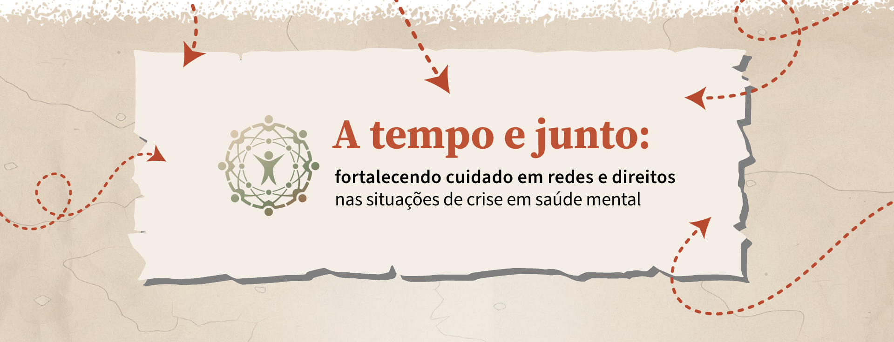
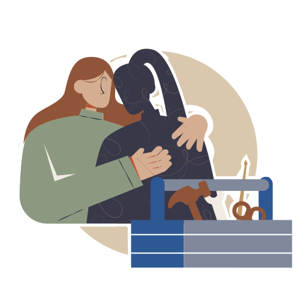
Caixa de ferramentas para situações de crise: estratégias imediatas
Objetivos
Objetivo geral:
Apresentar estratégias imediatas de atuação em situações de crise, a partir de uma compreensão ampliada e ecossistêmica do sofrimento mental, promovendo respostas que priorizem a restauração da hospitalidade, o fortalecimento de vínculo, o reconhecimento da centralidade do usuário, e que enfrentem contextos e condições gerais de vulnerabilidade, contribuindo para a desescalada da situação de crise e a reconstrução do laço social.
Ao final desta aula, você deverá ser capaz de:
- reconhecer e avaliar continuamente os níveis de vulnerabilidade e risco, considerando não apenas sinais clínicos, mas também condições contextuais, experiências de violência, exclusão, coerção e fragilização do laço social;
- desenvolver a capacidade de implementar intervenções mediadoras e de desescalada, priorizando estratégias de acolhimento, escuta qualificada, comunicação dialógica, negociação e adaptação do ambiente;
- promover a reavaliação contínua das intervenções realizadas, considerando a resposta do usuário, a evolução da situação e os impactos institucionais do cuidado ofertado.
Estratégias indiretas
Escute o áudio a seguir para reconhecer as ações indiretas. Acesse a transcrição aqui.
As estratégias imediatas de resposta às situações de crise afirmam um compromisso ético, clínico e político com a redução de danos, a defesa dos direitos humanos, a centralidade do usuário e a transformação das práticas institucionais, orientando o cuidado nessas situações para a desdramatização da cena, a proteção e a reconstrução do laço social.
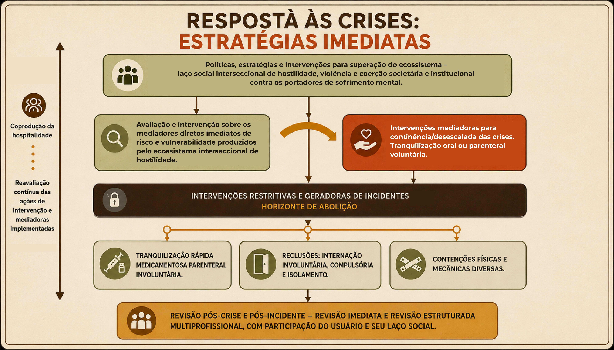

Logo após as núpcias, um casal recém-casado retorna da cidade ao seu povoado de origem. Era fim da tarde e, a cavalo, passavam pelas reentrâncias da Serra do Rola Moça (situada na Região Metropolitana de Belo Horizonte – RMBH, Ibirité, Brumadinho/MG). Felizes estavam, quando, de repente, o cavalo da moça escorrega, desequilibra-se, caindo no precipício.
O poeta Mário de Andrade, ouvindo a história popular do acontecido, fez por bem registrar:
Ah, Fortuna inviolável! O casco pisara em falso. Dão noiva e cavalo um salto Precipitados no abismo. Nem o baque se escutou. Faz um silêncio de morte. Na altura tudo era paz... Chicoteando o seu cavalo, No vão do despenhadeiro O noivo se despenhou. E a serra do Rola-Moça Rola-Moça se chamou.
Faça uma roda de conversa sobre os eventos da vida de cada profissional da equipe na qual você atua que constituíram uma crise pessoal, uma situação-limite ou uma situação de muito sofrimento. Aqueles momentos quando a vida pode perder o sentido, ou o famoso “ficar sem chão”.

Clique nas abas a seguir abaixo para se aprofundar no assunto.
Poucas cenas ensinam tanto sobre a crise quanto aquelas em que a vida, num instante, perde o chão. O poeta que registra a história registra um acidente, um corte naquilo que se esperava. Um acontecimento, desses que não cabem em explicação pronta, que interrompem as coordenadas com as quais a gente organizava a realidade e nos devolvem ao espanto. Há algo aí que não é só “o que aconteceu”, mas “o que o que aconteceu faz com o mundo” como se, de repente, o real ficasse maior do que as palavras disponíveis.
É aqui que a crise se apresenta com toda sua dureza: não como um problema isolado num indivíduo, mas como um rompimento do tempo e da linguagem. A pessoa pode até continuar respirando, andando, falando algo, mas o eixo que sustentava sentido se rompe. Em certas crises, o sofrimento não é possível ser colocado em palavras e descrito; chega como algo que ocupa. E, quando ocupa desse modo, o sujeito pode ser empurrado para aquilo que a clínica reconhece como passagem ao ato Passagem ao ato: quando um sofrimento intenso emerge, ele deve ter respeitado um tempo de elaboração, um tempo de reflexão, para que uma conclusão, uma resposta adequada seja possível. um gesto súbito, que atravessa o momento de compreender e encurta o caminho entre a angústia e a ação. Esse tipo de ato não é “propriedade” de um diagnóstico. É um fato humano geral, ligado à experiência de um insuportável que, por um momento, não encontra mediação.
O noivo vê, não compreende, não elabora a angústia maciça e súbita, o não sentido, o fatídico, a implosão do ideal (o ideal do amor e da felicidade) e, ato contínuo, impele o seu cavalo para o abismo. O noivo está diante do insuportável e se confronta com a moldura da solidão, não qualquer uma, mas a solidão absoluta das alturas, a paz inefável e avassaladora, como insinua o poeta. Incapaz de lançar mão de qualquer recurso para modular o seu sofrimento, o sujeito faz um curto-circuito do momento de elaborar e compreender o acontecimento, o seu destino, desatino, a sua crise, e se precipita no pior, passando ao ato.
A passagem ao ato é um fato humano geral – não pode ser associada a transtorno mental, pode sim ser associada ao sofrimento, à emergência impossível de suportar.
O fator tempo é um elemento crucial na apresentação e modulação das situações de crises, mas ele não cursa previsível, linear, ponderável. Seria mais simples se houvesse o antes, o agora e um depois, sequenciados e previsíveis, um ponto de surgimento, emergência da experiência, um momento de elaborar e a conclusão. Com relação às questões de “risco” e vulnerabilidade, fundamentais para as crises, no campo da saúde mental, temos uma linha do tempo que não é linear, previsível, ponderável tal como as constantes biológicas da perspectiva biomédica – “o coração parou, temos uma janela de tempo para ressuscitar”; o pâncreas deixou de produzir insulina... e assim por diante. Estamos diante de um contexto mais complexo e delicado.
Outro aspecto a se destacar é o fato de que, a despeito da dimensão pessoal e singularíssima dessa experiência diante da crise, ela acontece no contexto da interação do sujeito com o coletivo, o sujeito em rede, sujeitos enlaçados, destacando que somente há sujeito em rede, em laço social Laço social: consiste em um conjunto de vínculos e relações que podem separar ou enredar a conexão com as coisas e pessoas do mundo compartilhado, social. Forma de aliança de determinada pessoa com a família, com a religião, com o vizinho ou com a mãe, entre outros. . O insuportável que emerge e se faz urgência decorre do laço social, aparece como um corte, um furo, no laço social e na capacidade de simbolizar, elaborar, colocar em palavras a experiência emergente. Pode acontecer na vida “normal”, no desenvolvimento, no transcorrer normal de uma vida, a um evento venturoso, feliz, pode suceder a uma perda impensável, imprevisível, com valor de trauma tal como no poema a Serra do Rola-Moça.
A narrativa linear – “primeiro aconteceu, depois eu entendi, então decidi” –não se sustenta quando o impacto é grande. O que chamamos de “risco” e “vulnerabilidade”, tão presentes no campo da saúde mental, não se comporta como uma constante biológica previsível, com janelas objetivas iguais para todos. Na crise, a janela existe, mas ela não é uniforme, ela depende de história, de corpo, de contexto, de vínculos, de violência, de exaustão e, principalmente, de que tipo de resposta damos a essas situações. Depende, sobretudo, de se há ou não mediação suficiente para que a vida não precise “resolver” o insuportável pela via mais curta, mas que consiga tempo para se desenvolver e achar uma saída mais interessante para o impasse.
Nesse ponto central dos eventos traumáticos – o fato de não poder ser expresso em palavras, em um primeiro momento – não se encontram palavras para fazer borda ao sofrimento. E, por outro lado, o caso frequente, de não haver a presença de alguém (exceto a do algoz, como acontece) para dar uma resposta mais acolhedora. Acolhedora aqui seria essa ressonância, um olhar que marca uma presença, uma testemunha do que se viveu. Até uma palavra que venha dessa testemunha para fazer contorno.
Essas situações exigem que algo seja feito – é certo! Há que se fazer algo – trazer um singelo copo d’água, mostrar-se atento, um olhar interessado, olhar e posição compassiva, escutar, escuta como abertura para o Outro/outro, marcação de uma presença que enseja o diálogo, ações que abrem janelas no tempo e no campo do discurso e da palavra, permitindo a instauração de um tempo de compreender e elaborar não linear.
Muitas vezes, não é possível a tempo produzir essa abertura para os poderes da palavra e da elaboração – esse momento é possível somente a posteriori, pós-ato – daí a importância das ações pós-incidentes, as revisões imediatas ou estruturadas pós-eventos e situações de crise. Esse processo é marcado por expressões corporais diversas de todo mundo que participa da situação, externalizadas pela postura global, fisionomia, olhares e por marcadores internos, fenômenos fisiológicos, tais como a nossa pulsação, temperatura, fenômenos psicossomáticos, cinestésicos, passando, inclusive, pela ação do sistema nervoso em geral e pelo sistema nervoso autônomo, simpático e parassimpático, em particular. Quem está vivenciando a crise e quem está no apoio das situações de crise costumam sentir todas essas sensações.
Estudos recentes vão trazer à tona esses aspectos no campo da neurociência, da biologia e clínicos, por exemplo: os desdobramentos recentes das pesquisas e construções relativas ao setting, a cena psicoterapêutica em geral e a área do Modelo Diálogo Aberto – mostrando que há algo poderoso que opera na dimensão do corpo e afetos, junto com o verbal e a palavra, e para além deles (OPAS, 2022; Seikkula; Arnkil, 2020; Seikkula et al., 2022; Seikkula et al., 2023).
A partir daqui a ideia central é simples: crise pede mediação, não pressa; pede rede, não força. Quando dizemos “a tempo e junto”, estamos nomeando um método de olhar, escutar e intervir. Há crises que explodem como tempestade e há tempestades que foram anunciadas por semanas, meses, às vezes anos, sem que território, rede e instituição encontrassem linguagem e tempo para reconhecê-las. “A tempo e junto” é a recusa de duas saídas fáceis: o atraso e a força. Atraso é esperar a explosão para então acionar respostas que já começam pelo fim; força é substituir cuidado por controle quando a cena nos desorganiza.
No “caso” da Serra, o noivo vê, mas não consegue fazer borda ao que aconteceu. O impacto é grande demais, e a experiência vira um curto-circuito: não há tempo para compreender, não há palavras, não há apoio imediato. Às vezes é um copo d’água; às vezes é reduzir ruído; às vezes é afastar plateia; às vezes é oferecer uma cadeira, baixar o tom, marcar presença; às vezes é dizer “eu estou aqui” sem invadir; às vezes é combinar “vamos ficar assim por cinco minutos e depois decidir o próximo passo”. São gestos pequenos, mas decisivos: devolvem tempo de compreender.
Esse tempo não é linear, talvez um espiral. Ele é feito de voltas, pausas e recomeços. Por isso, “a tempo” não significa pressa; significa responsividade (uma adaptação fluida daquilo que acontece, logo quando acontece). E “junto” significa continuidade (não abandonar depois do pico, não trocar a vida por um “encaminhamento”), garantindo inclusive uma certa previsibilidade, mesmo que de dez minutos. Por isso, crise precisa de organização mínima.
Outra ideia precisa ficar nítida: a crise grave raramente é só “do indivíduo”. Muitas vezes, ela revela um ecossistema Ecossistema: refere-se a um conjunto de fatores que se conectam e funcionam juntos — família, trabalho, renda, moradia, alimentação, estresse, apoio social e serviços de saúde, território, raça, classe e gênero. Esses fatores influenciam uns aos outros e influenciam todos aqueles incluídos na situação (família, vizinhos, profissionais de saúde). Compreender como funciona cada ecossistema, de cada usuário, auxilia nas ações de cuidado de um percurso singular. de hostilidade: desigualdades, violência, estigma, racismo, transfobia, perdas acumuladas, barreiras de acesso, e, dentro do serviço, pressa, ameaça, humilhação. Nesse cenário, a palavra “risco” pode virar o nome técnico de um medo social daqueles que precisam lidar com situações de crise. O desafio é substituir “medo” por leitura ampliada e por intervenção mediadora: reduzir hostilidade, apostar no vínculo, criar espaço seguro, sustentar rede, combinar retornos e responsabilidades.
Passe o mouse nas imagens para entender melhor.
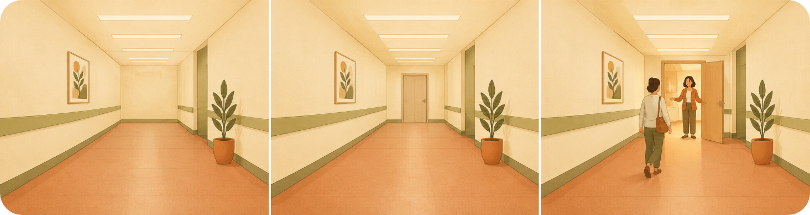
Há uma imagem que ajuda: quando a crise se intensifica, a realidade pode estreitar até parecer um corredor sem portas. Se o serviço entra empurrando, estreita ainda mais. Se, ao contrário, o serviço chega com hospitalidade acolhedora – clareza, ritmo, ambiência, pactos curtos e consensuais, rede – ele reabre portas.
Reabrir portas é reduzir risco de forma mais inteligente do que “gerir risco” com rótulos. Segurança não é o mesmo que “restrição”; segurança é efeito de vínculo, adaptabilidade e continuidade.
Por fim, há um compromisso que organiza tudo: na crise, não recuar na dignidade. “Nenhum passo atrás” é direção: cuidar sem humilhar, proteger sem punir, decidir sem substituir o sujeito. Nos serviços que tomam a crise como aprendizagem, adaptando-se ao que surge inesperadamente, acabam transformando crise e pós-crise em possibilidade de prevenção, pois retomam no presente algo do passado e, por isso, alteram o futuro.
O futuro determina o passado, fazendo com que nossas ações tenham efeitos retroativos, ou seja, mudam o sentido de um acontecimento anterior ou situação difícil da vida. Se, diante da morte da mãe, o filho é preso porque saiu nu pela comunidade, a memória da morte da mãe é ainda pior. Se, ao contrário, ele é acolhido e acompanhado por alguém de sua preferência, a memória é outra.

Os acontecimentos mudam as pessoas por dentro e por fora, por um tempo poderá faltar palavras. O trabalho do cuidado não pode responder com violência ao corpo já agitado e hostil. Devemos produzir condições para que, algo do sentido, da ideia do que está se passando, possa ser reconstruído – a tempo e junto.
A vida cotidiana costuma ser sustentada por um ritmo silencioso: hábitos, horários, pequenas promessas, previsões mínimas. Quando a crise chega, esse ritmo se dissolve e a pessoa pode experimentar o mundo como urgência absoluta, o futuro estreito e o presente pesado. A fala, nesse cenário, não some porque a pessoa “não quer falar”, mas porque aquilo que se vive ultrapassa, por instantes, a capacidade de dar um nome: vergonha, culpa, saudade, medo, invasão, perseguição, peso, coragem, audácia?
Clique em cada tema para conhecê-lo:
Quando uma situação de crise se apresenta, a equipe na qual você atua tem maleabilidade para mudar a programação?
Como essa equipe discute as mudanças necessárias para cada caso?
Isso ocorre na reunião de equipe?
Só um decide ou todos decidem?

Há ainda um ponto decisivo: crise é uma experiência de desconfiança. A pessoa pode desconfiar de si, do mundo e do serviço. Por isso, cuidado precisa ser repetido e comprovado: o serviço diz que vai voltar, e volta; diz que vai explicar, e explica; diz que não vai punir, e não pune. Essa consistência produz confiança e reduz risco porque diminui a necessidade de defesa e aumenta a segurança para o usuário. Talvez um dos poucos momentos que há um pouco de sustentação e de previsibilidade, mas a previsibilidade do cuidado.
Quando o serviço compreende isso, ele não tenta “vencer” a conversa nem fechar a questão. O foco passa a ser garantir o que vem agora: um passo simples, possível e combinado. Nas situações de crise, esse passo imediato ajuda mais do que qualquer leitura impecável do que está acontecendo.
Uma das hipóteses é o que vem se estabelecendo como clínica/cuidado do trauma. O trabalho na linha de frente dos territórios de inserção dos nossos serviços, sobretudo nas grandes cidades e suas periferias, foi se configurando como manejo cotidiano de situações em que violência, desproteção e marcas traumáticas estão presentes. Por isso, uma parte expressiva da produção científica recente sobre abordagem da crise já advoga um modelo de cuidado orientado pelo trauma, o “trauma informed care” (cuidado trauma-informado): constituiu-se um campo teórico e de prática, com formulações e modelos de abordagem que precisam ser discutidos, criticamente.
Estaríamos vivendo uma nova modalidade do traumatismo coletivo? Produzido em toda parte do planeta e divulgado em tempo real? Um dos aspectos desse processo na contemporaneidade é que o trauma, a tragédia, incorporou-se, foi elevado a uma forma de estar no mundo e de ser controlado – produzir o trauma como modo de governo.
Estamos presenciando uma mudança de realidade e qualidade nos quadros que formulávamos sobre o espectro ampliado das crises que podem acontecer na sociedade, no laço social em toda a sua amplitude, e que se transformam em demanda de cuidado e atenção pelos sistemas de saúde e saúde mental em particular. A seguir, temos um quadro tradicional do espectro das experiências e dos transtornos que produzem sofrimento e apresentação de crise:
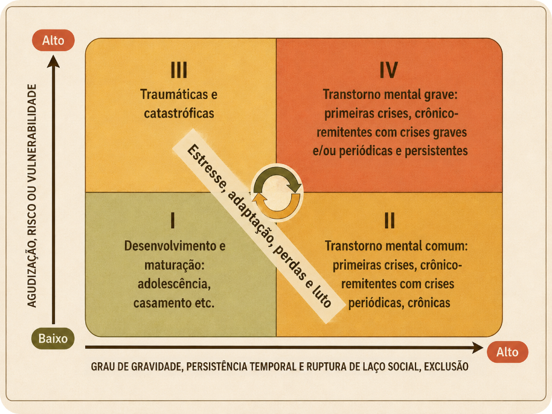
Nessa formulação de espectro amplo, considerávamos a importância dos conflitos, das crises decorrentes do desenvolvimento normal, das passagens dos ciclos de vida e da evolução biográfica padrão em nossas sociedades, os desencontros e acontecimentos malfadados da vida. Considerávamos a importância, e continuamos a fazê-lo, dos processos de adaptação, as perdas, os fracassos, os lutos que geram sofrimento e estresse e muitas vezes formam a base do surgimento de transtornos mentais.
Considerávamos, sem dúvida, nesse espectro das crises, aquelas decorrentes de experiências coletivas, das tragédias, catástrofes, essa experiência do trauma coletivo, do traumatismo no laço social. Presente estão, como recortes importantes, as modalidades de crise e sofrimento mental decorrentes dos transtornos mentais comuns e graves, severos, persistentes ou não.
Contudo, estamos vivendo um momento histórico em que a precarização da vida, decorrente das contradições do modo de gestão neoliberal, gerou determinações de produção da subjetividade e do sofrimento que ampliaram e modificaram a apresentação e a demanda de cuidado para situações de crise. Os eventos normais da existência, as passagens de ciclo de vida e as fases do desenvolvimento estão sendo experimentados com uma carga de sofrimento exorbitante em relação ao passado.
O trauma – a experiência traumática como um evento que convoca o sujeito em seu limite diante da emergência de um real insuportável e impossível de simbolizar – deixou de ser um fato individual, um acidente individual, um fado, um mau encontro, mesmo que repetido e marcante para a existência daquele sujeito. As experiências traumáticas coletivas – tragédias, catástrofes – estavam presentes e de forma marcante. Afinal, o século XX não foi outra coisa, tal como analisou Eric Hobsbawm (2023), historiador britânico, um século sangrento, a era das tragédias e das catástrofes.
Essa dimensão é uma marca da consolidação do Antropoceno, a era do planeta com o homem no comando absoluto. As duas grandes guerras, o Holocausto, a Bomba, as bombas. O “Por que a Guerra?”, de Freud e Einstein, a interrogação que não cessa, o horror da primeira guerra, repisado e revisado, inclusive, por produções recentes do cinema. O horror da primeira guerra não evitou a segunda, não evitou o Vietnã, exigiu guerras sangrentas de Libertação Nacional, não evitou Hutus versus Tutsis, não evitou o lento genocídio e, depois, a “solução final” em Gaza e Cisjordânia. Não pode passar despercebido que os ex-combatentes do Vietnã foram o principal objeto de pesquisa para criação da atual teoria do trauma (Van der Kolk, 2020; Maté, G.; Maté, D., 2023; Reis; Ortega, 2023).
Todavia, passados 87 anos, as grandes potências não entraram mais em confronto global direto; elas, agora, produzem pequenas guerras, inventadas, calculadas, seriadas no tempo contra países pequenos, razão de ser da justificativa da permanência do complexo industrial militar – é uma forma de negócio e de exercício, demonstração do seu poder. Esses exercícios de poder e produção de catástrofes – traumatismos coletivos, quase sempre etnogenocídios, são divulgados em tempo real e escala mundial.
Um dos aspectos desse processo na contemporaneidade é que a produção do trauma, da tragédia, incorporou-se, foi elevada a uma forma de governo, um dispositivo biopolítico performático – produzir o trauma como modo de governo, como exercício biopolítico e necropolítico. É serial, não termina nunca, uma sucessão de eventos que dá contornos absolutamente desumanizantes a essa modalidade de exercício de poder.
Um dos aspectos desse processo na contemporaneidade é que a produção do trauma, da tragédia, incorporou-se, foi elevada a uma forma de governo, um dispositivo biopolítico performático – produzir o trauma como modo de governo, como exercício biopolítico e necropolítico. É serial, não termina nunca, uma sucessão de eventos que dá contornos absolutamente desumanizantes a essa modalidade de exercício de poder.
Estamos vivendo uma nova modalidade do traumatismo coletivo, produzido em toda parte do planeta e divulgado em tempo real. Gaza e os acontecimentos do Complexo do Alemão e da Penha são uma demonstração dessa ampliação da questão do trauma.
Os aspectos anteriormente destacados se entrelaçam com a complexidade contemporânea da determinação dos modos de produção e reprodução do laço social, da subjetividade e dos processos saúde-doença. Nas últimas décadas, os processos de degradação econômica, social e política trazidos pela gestão neoliberal do capitalismo tornaram a concepção de uma determinação social do processo saúde-doença um fato ontológico. Efetivamente, os determinantes sociais e a intersecção entre eles aparecem na realidade concreta.
Clique nos numerais e veja alguns fatos que marcaram a nossa sociedade.
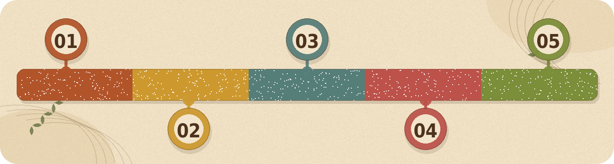
A determinação social mais clássica, relacionada à produção e reprodução, ao lugar no processo produtivo, à classe social e aos processos de formação ideológicos, objetivos e políticos decorrentes dessa base produtiva e de reprodução, foi acrescida de aspectos ontológicos da existência social, tais como sexo, gênero, raça e etnia, que passaram a servir também como geradores de determinantes de processos de modulação e constituição dos modos de andar a vida, das subjetividades e dos processos de saúde-doença, em pé de igualdade com a determinação mais clássica.
A modalidade neoliberal de gestão do capitalismo entrou numa crise sem precedentes – e uma nova modalidade de configuração do capitalismo não foi gerada, tampouco um caminho para a sua superação. As “cinzas” do neoliberalismo formam uma moldura de marginalização, exclusão, desagregação e segregação, que atinge a maior parte da humanidade – a precarização da vida em escala global gera a moldura do traumatismo coletivo –, o trauma enraizado no tecido social e no cotidiano das pessoas e populações.
Em algumas regiões e países, esses processos têm sido mais graves devido a particularidades dos processos de constituição histórica das formações econômicas e sociais, as quais engendram as determinações mais gerais dos modos de andar a vida, dos processos de saúde-doença. O Brasil e os vários países que foram objeto dos empreendimentos coloniais e neocoloniais, por exemplo, são exemplos vivos da crueza dessas particularidades.
Um dos aspectos mais importantes do nosso caso diz respeito ao fato de que o empreendimento capitalista mercantil colonial que nos deu origem produziu aqui uma formação econômica e social cuja base era a exploração racializada da força de trabalho no modo escravidão. Mais tarde, a independência nacional e a abolição da escravidão geraram novos vetores para a nossa formação social, mas a situação da mão de obra “libertada” não sofreu grandes transformações.
As grandes massas de trabalhadores afrodescendentes, após a abolição, não conquistam de imediato o estatuto de proletariado, de trabalhadores formais vendendo a sua força de trabalho em um “mercado justo”. Infelizmente, esse processo foi lento, desigual e incompleto, na medida em que foram ficando à margem do pacto produtivo do capital, numa zona de subcidadania. Exemplo concreto é o trabalho doméstico, cujo estatuto de trabalho assalariado formal somente foi conquistado em 2015, 125 anos depois da abolição.
Na realidade concreta da atual formação social e econômica brasileira, temos uma massa de trabalhadores negros e pardos (é evidente que temos, também, na mesma situação, um contingente de populações brancas de origem europeia e outros raças e etnia) que, de forma transgeracional, está no exército de reserva, excluída da concertação econômica, sobrevivendo na informalidade.
Nos melhores momentos dos nossos ciclos econômicos e quando incluídos no mercado de trabalho assalariado, a inclusão é na forma precarizada e instável – um precariado, subproletariado, conceitos dependentes das perspectivas dos autores que estudam o tema. Combinamos e superpomos a exclusão econômica e a de raça – um racismo estrutural persistente, o qual produz uma quarta classe social, vivendo na subcidadania.
O par raça-classe forma uma intersecção poderosa, criando um ecossistema de mediações que dá conta dos modos diferenciais de saúde, doença, reprodução de subjetividades e sofrimento mental para os povos afrodescendentes no Brasil. A essa classe pertence a maioria dos usuários da RAPS Rede de Atenção Psicossocial (RAPS): é uma rede integrada de serviços que atende a pessoas com sofrimento mental ou que enfrentam problemas com uso prejudicial de álcool e outras drogas, dentro do Sistema Único de Saúde (SUS). Articula diferentes pontos de atenção para garantir um cuidado integral e contínuo. brasileira. Ela arca com uma tríplice exclusão, estrutural, histórica e geracional: a econômica, a de raça e a decorrente da loucura – e, internamente a ela, surgem outras exclusões, como as de gênero e sexo.
É absolutamente pertinente uma leitura histórica dos manicômios brasileiros sob essa perspectiva. O Hospício de Barbacena no documentário de Helvécio Ratton (“Em nome da razão”) e o livro “Holocausto Brasileiro”, de Daniela Arbex, mostram navios negreiros. Toda memória histórica e registros relativos aos manicômios brasileiros, incluindo a nossa literatura, tal como no “Cemitério dos Vivos”, de Lima Barreto, atestam essa leitura. Os manicômios brasileiros são uma esquadra interminável, que se perde no horizonte, de navios negreiros transportando os afrodescendentes que foram excluídos da nossa formação econômica e social e segregados navegando para lugar nenhum.
Nesse âmbito, sugerimos a leitura dos seguintes artigos:
- “Holocausto ou Navio Negreiro?”: inquietações para a Reforma Psiquiátrica brasileira, disponível em: https://periodicos.ufes.br/argumentum/article/view/21483/15672
- Desnortear, aquilombar e o antimanicolonial: três ideias-força para radicalizar a Reforma Psiquiátrica Brasileira, disponível em: https://www.scielo.br/j/csc/a/zZK9rjQ6KgLGQm3B9r4zTxD/?format=pdf&lang=pt
Além disso, assista ao filme “Em nome da razão”, disponível em: https://youtu.be/OPiPUUUbVoI?si=thG9pc9qJ3GOjunb

A experiência clínica e o cuidado no campo da Reforma e, principalmente, a constituição de um movimento de usuários forte geraram um contexto de escuta e acolhimento dos usuários não somente sobre o seu sofrimento atual, mas também de suas histórias. O movimento de usuários, na nomenclatura mundial, o movimento de recovery, produziu narrativas consistentes sobre as experiências biográficas dos usuários, e essas narrativas biográficas começaram a destacar a presença evidente de experiências traumáticas compondo as suas trajetórias desde a infância e, inclusive, na relação com os serviços, as quais hoje não se pode ignorar dada a sua relevância. São experiências traumáticas muito graves desde a infância, bem como experiências traumáticas após o início da experiência de sofrimento mental, as quais foram corroboradas progressivamente por estudos amplos e de qualidade.
Clique nos números e acompanhe resultados de alguns estudos.
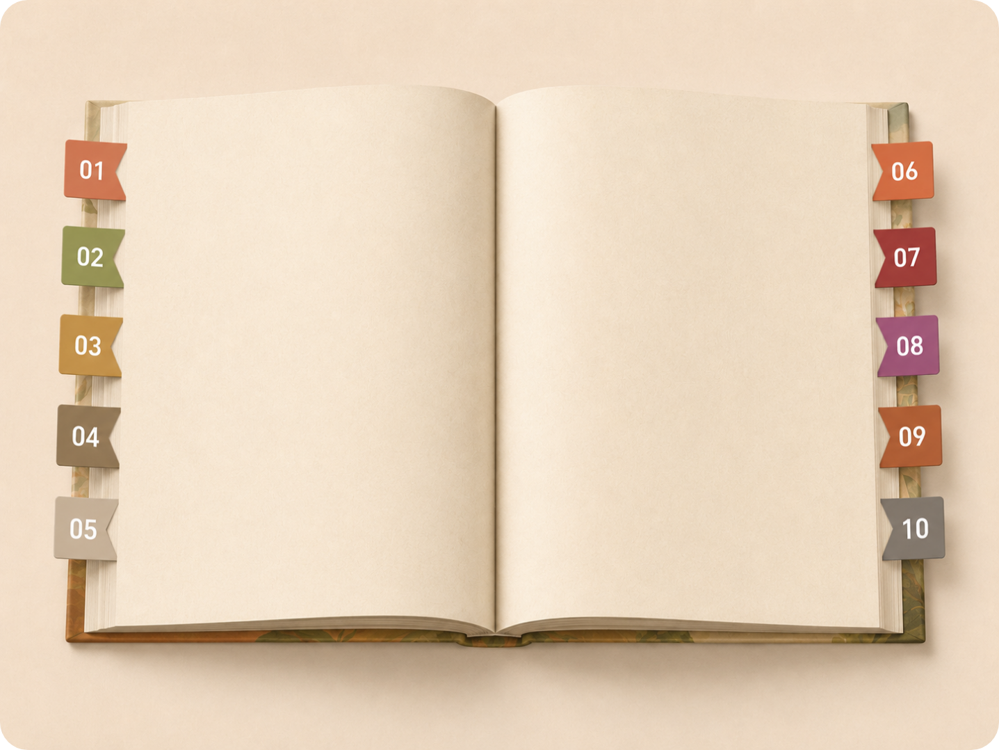
Tema 1
Outra questão importante das pesquisas e da experiência acumulada sobre o papel do trauma e das experiências traumáticas presentes no laço social e sua relação com o sofrimento mental é sua importância para analisar a dimensão traumatizante e ainda não superada da coerção e da violência institucional estrutural presente em diversas instâncias de atuação do Estado, desde o sistema policial, passando por diversas políticas públicas, até chegar às instituições de saúde e saúde mental.
Para continuar aprendendo, clique em cada ícone de áudio ou acesse a transcrição aqui.
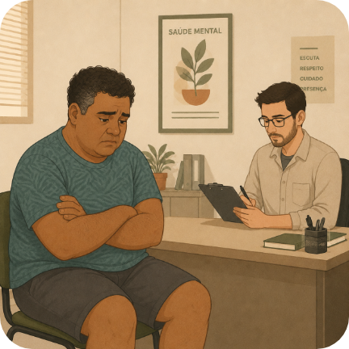
William chega ao CAPS na hora do almoço depois de meses sumido. Anda rápido e impaciente, reclamando que o serviço não serve para nada. Magda, a referência, é chamada mesmo estando em atendimento com uma família. Irrita-se e diz que outras pessoas podem lidar com William também, que ele usa crack, mas não morde.
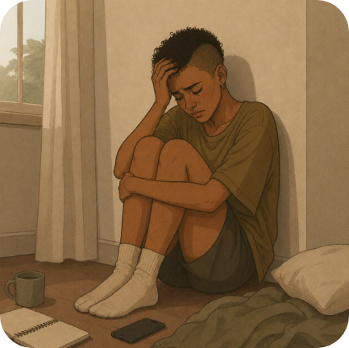
Mariana, de plantão, concorda, mas não sabe muito bem como proceder, e os outros profissionais passam a fingir que não estão ouvindo a gritaria. Mariana lembra da supervisão em que discutiram William, agora se enche de coragem e quer tentar resolver a situação com o usuário. Andando até ele, vai pensando em como começar uma conversa sem que aumente o nível de tensão e ele comece a gritar e puxar briga.
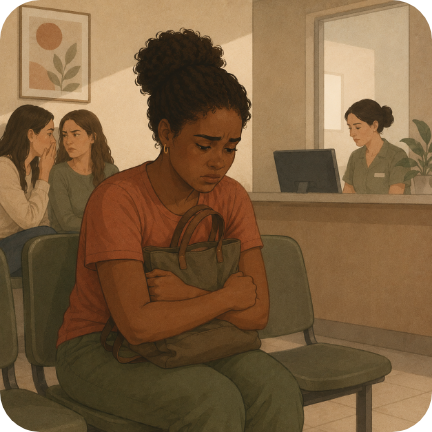
Nos poucos segundos que andou, visto que o CAPS é pequeno, chega bem perto do usuário, firme, mas delicadamente sorri. William se surpreende e Mariana pergunta se ele pode ajudá-la a fazer o café e colocar a conversa em dia.
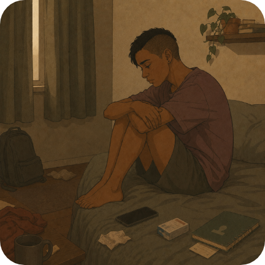
A ação de Mariana não dá muito certo de primeira, William volta a gritar e, agora no ouvido dela, diz que não é criança para aceitar comida e calar a boca. Gislene, lá da cozinha, vai espiando de rabo de olho.
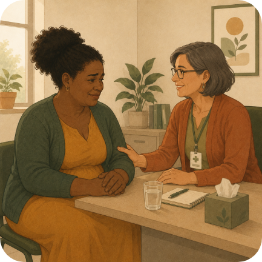
Mariana tenta de novo, mas agora foca mais no que ele está dizendo e sugere que, enquanto fazem café, ele fale da reclamação em relação ao CAPS, e se preparem para quando o gerente chegar da reunião para a qual foi.
William topa o café e coloca os braços nos ombros de Mariana. Ele diz que não a conhecia, que ela é diferente dos outros. Por fim, concorda com contar onde ele estava.
A associação entre loucura e perigo não é um acidente de percurso da psiquiatria, ela nasce com o próprio dispositivo. Desde o século XIX, quando se separam juridicamente razão e desrazão, a figura do “louco perigoso” é convocada para legitimar o internamento, a tutela e a segregação (Foucault, 2006). A partir daí, a ideia de que o portador de sofrimento mental é uma ameaça em potencial para si e para os outros vai se sedimentando no tecido social, nas práticas de cuidado e nas políticas públicas.
No cotidiano dos serviços, isso se condensa em um enunciado que todos conhecem de cor: “a crise como perigo para si e para os outros”. Nas situações de crise – de conflito agudo, ameaça ou ruptura do sujeito com sua rede –, em que se evidenciam riscos e vulnerabilidades para todos, a resposta quase automática de muitos dispositivos psiquiátricos e da própria ordem pública é colar ao sujeito o rótulo: “perigoso para si e para outrem”. Esse enunciado, tipicamente manicomial, autoriza – e naturaliza – o uso da força, a internação involuntária ou compulsória e todo um leque de medidas restritivas (Dell’Acqua; Mezzina, 2005).
A “doutrina da periculosidade” ganha, assim, dupla consistência: de um lado, como saber especializado (psiquiátrico, jurídico, policial); de outro lado, como imaginário cultural que atravessa famílias, comunidades, mídia e serviços. Ao longo das últimas décadas, sob o impacto da reforma psiquiátrica e da crítica antimanicomial, o termo “periculosidade” foi sendo progressivamente substituído por uma linguagem aparentemente mais neutra e científica: a “moderna teoria do risco”. Sai o rótulo bruto – “perigoso” –, entra o jargão da avaliação de risco, das escalas, dos fatores de risco e proteção, da estratificação em “baixo”, “moderado” e “alto risco”.
No entanto, o que os dados e a experiência mostram é que, muitas vezes, mudamos o nome, mas a violência fica. A teoria do risco funciona, não raro, como prolongamento técnico da velha doutrina da periculosidade: muda o vocabulário, mas se preserva o eixo central que coloca o portador de sofrimento mental como a principal ameaça a ser contida.
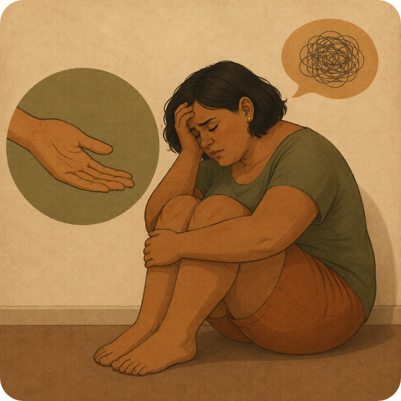
A crítica que se impõe hoje, tanto a partir da clínica quanto da pesquisa, exige recolocar a questão em outro plano. O sujeito com sofrimento mental grave não chega “nu” à cena da crise. Ele chega carregando um macrocontexto hostil: racismo estrutural, desigualdades de classe, violência de gênero, precarização extrema da vida, perda de direitos, trajetórias de exclusão escolar e laboral, experiências reiteradas de violência policial, comunitária e doméstica. Tudo isso atravessado pelo estigma produzido justamente pela associação entre loucura e perigo (Large et al., 2009; Steadman et al., 1998; Norko; Baranoski, 2008; Fazel et al., 2009).
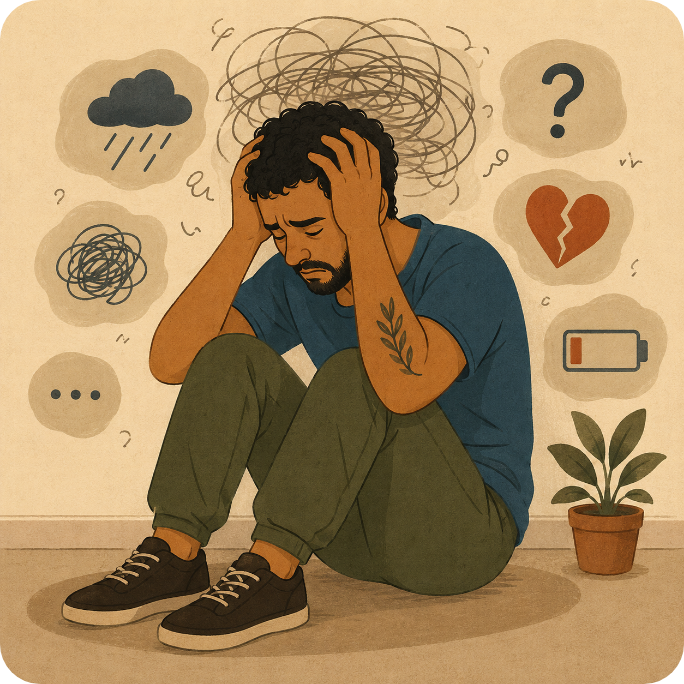
Ao mesmo tempo, chega a um microcontexto relacional já tensionado: vínculos familiares corroídos, laços comunitários frágeis, histórias de abuso e humilhação na própria rede de cuidado. A micropolítica das relações – quem tem voz, quem manda, quem cala, quem é ouvido, quem é desautorizado – faz com que o sujeito em crise ocupe, quase sempre, a posição de elo mais frágil do laço social: aquele sobre quem se projeta o medo, a desordem, o excesso.
É nesse encontro entre macro e micro – entre um ecossistema social de hostilidade e uma micropolítica de laços assimétricos – que a crise se instala. E é também aí que se decide, concretamente, quem é perigoso para quem. As pesquisas das últimas décadas vêm desmontando a ideia de uma periculosidade intrínseca aos transtornos mentais. Quando se controlam variáveis como uso de substâncias, contexto social e história prévia de violência, o que aparece são associações modestas e frequentemente mediadas (Steadman et al., 1998; Appelbaum; Robbins; Monahan, 2000; Elbogen; Johnson, 2009; Teasdale; Silver; Monahan, 2006; Fazel et al., 2009).
A experiência em serviços territoriais e em dispositivos de crise já vinha dizendo, há muito tempo, algo que parecia “apenas” uma percepção empírica: pessoas com transtornos mentais graves apanham mais do que batem; são mais alvo do que origem da violência. O que os estudos recentes fazem é dar corpo estatístico a essa percepção.
Desmarais et al. (2014), trabalhando com 4.480 adultos com transtornos mentais em cinco estudos nos EUA, avaliaram, em seis meses, tanto a perpetração quanto a vitimização por violência comunitária. A amostra inclui principalmente pessoas com esquizofrenia (63,5%), além de depressão maior, transtorno bipolar e transtornos por uso de substâncias; quase 40% tinham sido hospitalizadas nos três meses anteriores. O resultado central é simples e devastador: a vitimização é mais frequente do que a perpetração. Aproximadamente 23,9% relataram ter cometido algum ato violento, enquanto 30,9% relataram ter sido vítimas de violência no mesmo período – diferença estatisticamente significativa. Não é detalhe: a narrativa dominante fala do “risco que eles oferecem”; os dados mostram, antes, o risco a que eles estão expostos.
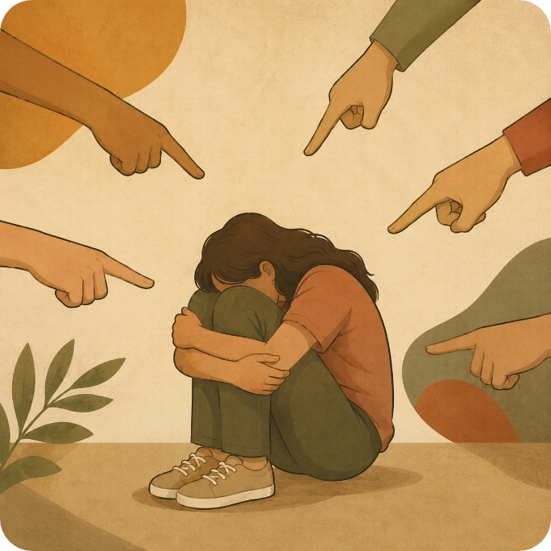
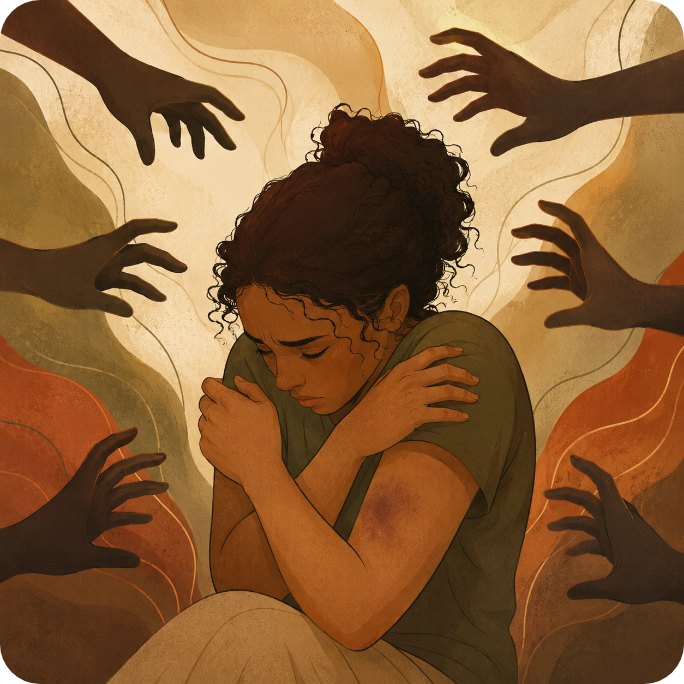
Além disso, a maior parte desses episódios ocorre em ambientes residenciais (casa própria, casa de familiares, vizinhança), e não em grandes cenas públicas, espetacularizadas pela mídia. A violência que atravessa esses sujeitos é, na maioria das vezes, íntima, doméstica, comunitária, inscrita no cotidiano. E, entre aqueles que se envolveram em situações de violência, uma proporção expressiva sofreu lesões físicas – a vitimização gerou, proporcionalmente, mais lesões do que a autoria de violência.
Há, ainda, um dado clínico-político decisivo: Desmarais et al. (2014) encontram uma correlação robusta entre perpetração e vitimização (r ≈ 0,50). Quem agride, em grande medida, é alguém que acabou de ser agredido; a violência aparece como reação, como resposta a ataques prévios, como gesto desesperado em um circuito relacional marcado pela hostilidade. Isso vale tanto no macro (ambiente social violento) quanto no micro (família, comunidade, serviço).
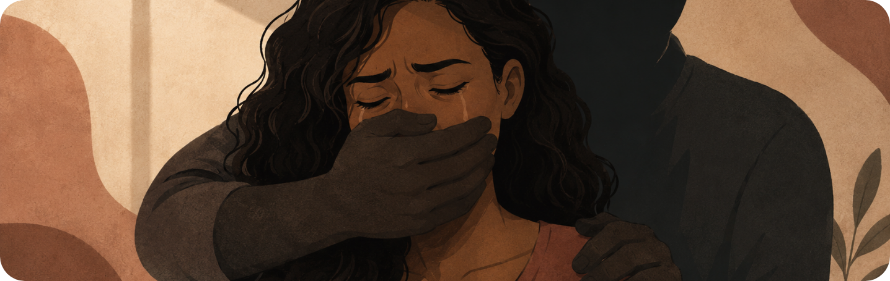
Essa leitura é aprofundada por estudos de base populacional mais recentes, como os de Dean et al. (2024) e Marr et al. (2024), que examinam riscos absolutos e relativos de vitimização e perpetração após o início de transtornos mentais graves. Os resultados caminham na mesma direção: taxas de vitimização muito superiores às da população geral, forte coocorrência entre ser vítima e ser autor, e papel determinante dos contextos sociais e familiares.
A síntese proposta por Hodgins (2024) é particularmente importante para o campo da crise. Ao examinar evidências sobre pessoas com transtornos do espectro da esquizofrenia (SSD) e transtorno bipolar (BD), a autora mostra que esses sujeitos são sistematicamente mais vítimas de crimes e violência interpessoal do que as pessoas que vivem nos mesmos territórios. Em alguns estudos, eles aparecem quase três vezes mais como vítimas de qualquer crime e cinco vezes mais como vítimas de agressões violentas. Em coortes nacionais de grande porte, esse excesso de vitimização se mantém mesmo controlando diagnóstico e autoria de crimes; em estudos com irmãos, a diferença praticamente desaparece quando se levam em conta fatores familiares e de contexto, o que indica que o problema não é a “doença” em si, mas o lugar social em que o sujeito diagnosticado é colocado (Dean et al., 2024).
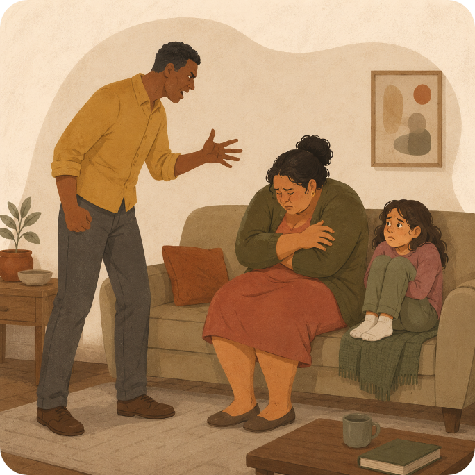
O ponto mais contundente, para nosso tema, é o nexo temporal entre sofrer e praticar violência: após um episódio de vitimização, na semana seguinte, pessoas com SSD tornam-se cerca de 12,7 vezes mais propensas a cometer crime violento; pessoas com BD, 7,6 vezes (Hodgins, 2024). Em outras palavras: a violência dirigida ao portador de sofrimento mental é produtora de violência praticada por ele. Se o serviço não vê – ou não quer ver – a vitimização anterior, a reação é lida como “agressividade do quadro”, “alta periculosidade”, “risco iminente”. E, a partir daí, fecha-se o circuito que conhecemos bem:
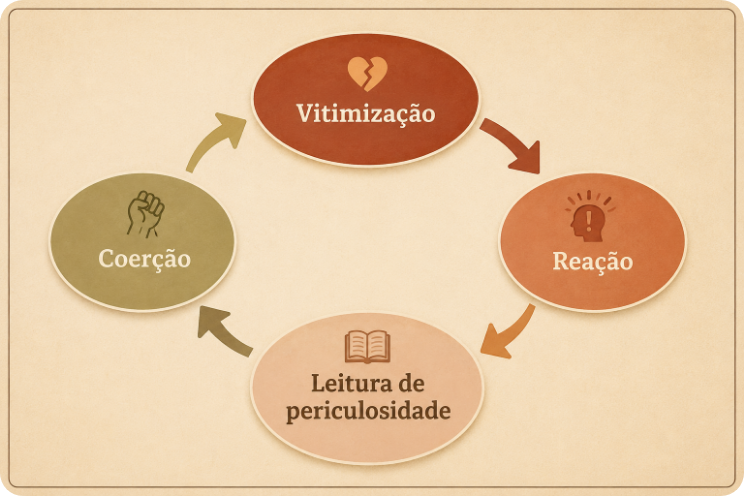
Por isso, invertemos o eixo: em vez de perguntar apenas “quão perigoso é este usuário?”, a pergunta passa a ser quão perigoso é este ecossistema para o usuário. Se o ecossistema não muda, “melhorar” a avaliação de risco tende a sustentar a mesma coerção, só que com linguagem mais técnica (Belayneh et al., 2024; Desmarais et al., 2014; Hodgins, 2024; Carpiniello; Vita; Mencacci, 2020; McSherry; Gooding; Maker, 2023).
Se, do lado da comunidade, a vitimização é forte, do lado dos serviços o quadro não é melhor. A revisão sistemática e meta-análise de Belayneh et al. (2024) colocam em números aquilo que a prática já sabia, mas que muitas vezes é silenciado: contenção física (mecânica), reclusão e contenção química são, hoje, tecnologias correntes de gestão da crise em unidades de internação psiquiátrica. As prevalências médias globais encontradas giram em torno de 14% a 16% para contenção mecânica e para isolamento, e cerca de 25% para contenção química – com estudos em que mais da metade dos pacientes internados foi submetida a pelo menos uma dessas medidas.
O dado mais escandaloso talvez não seja a prevalência isolada, mas a heterogeneidade extrema entre os estudos (I² > 99%). Em vez de entender isso apenas como “diferença metodológica”, a leitura crítica aponta para outro lado: essa variação é sintoma de um esforço institucional de tornar a coerção invisível. Muda-se o nome (“segurança”, “proteção”, “contenção terapêutica”), mudam-se o registro, a ficha, o protocolo, mas o núcleo é o mesmo: governar a crise por meio de dispositivos restritivos.
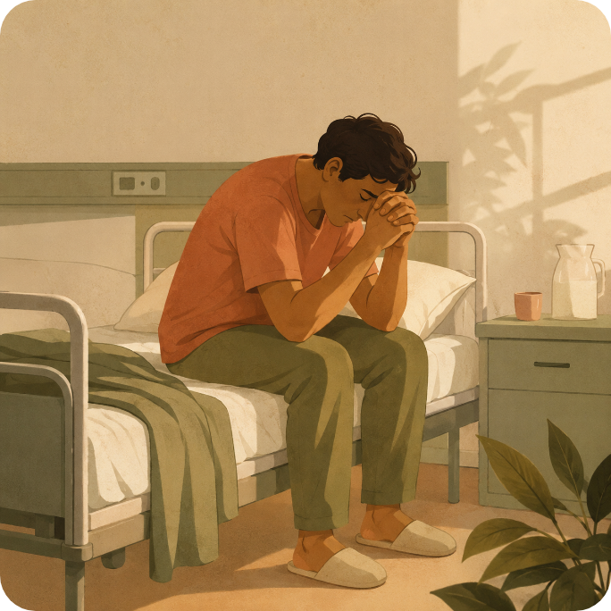
Quase sempre a justificativa registrada é o risco: “para segurança do paciente e de terceiros”, “para evitar danos”, “para controlar agitação”. No entanto, as evidências de benefício clínico dessas medidas são frágeis, enquanto os danos físicos e psíquicos – inclusive mortes em contenção – são amplamente documentados (Fisher, 1994; Mohr, W.; Petti; Mohr, B., 2003; Way; Banks, 1990; Araújo et al., 2010; Sailas; Fenton, 2000; Weiss et al., 1998). A equação é a mesma que aparece na revisão de Belayneh et al. (2024): coerção de benefício duvidoso, dano certo.
A revisão de Carpiniello, Vita e Mencacci (2020) fecha esse quadro ao articular, em chave clínica, violência, vitimização e coerção.
Clique nas caixas vazias para dar um check e expandir o resultado.
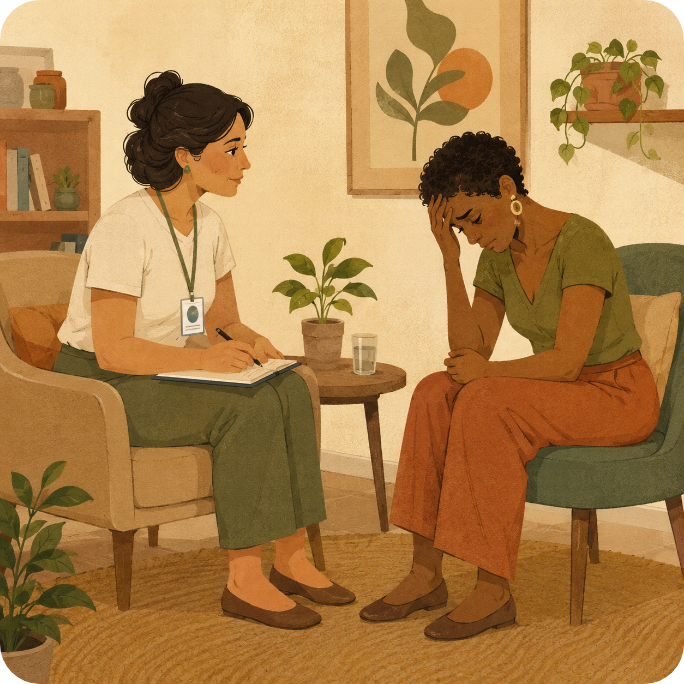
Assim, aquilo que aparece fragmentado como “práticas restritivas”, de um lado, e “violência institucional”, de outro lado, é, na verdade, o funcionamento de base de um ecossistema institucional de hostilidade. O sujeito com sofrimento mental não encontra, na porta do hospital ou do serviço de emergência, um “fora” do circuito de violência; encontra, muitas vezes, apenas uma nova versão dela, agora descrita em linguagem técnica e legal.
É aqui que a “moderna teoria do risco” mostra sua face política. Ferramentas de avaliação de risco de violência, embora apresentadas como instrumentos científicos, produzem níveis muito altos de falso-positivos (Norko; Baranoski, 2008; Appelbaum; Robbins; Monahan, 2000; Fazel et al., 2009). Ou seja: classificam como “de risco” e, portanto, como candidatos à coerção, muitos sujeitos que jamais cometeriam violência grave. O risco passa a operar, então, não como instrumento neutro de previsão, mas como dispositivo de legitimação do controle.
McSherry, Gooding e Maker (2023) nomeiam o “impasse de Genebra” para descrever a tensão entre, de um lado, a Convenção sobre os Direitos das Pessoas com Deficiência (CRPD) – que afirma que a deficiência psíquica não pode, por si só, justificar privação de liberdade ou tratamento forçado – e, de outro lado, leis nacionais que continuam autorizando internações e tratamentos involuntários com base em categorias vagas como “risco para si e para terceiros”. O campo jurídico internacional se move em direção a um paradigma de direitos, apoio à decisão e abolição da coerção; o campo clínico-legal interno insiste em se apoiar na linguagem do risco para preservar práticas herdadas da doutrina da periculosidade (OMS, 2005).
Isso confirma a hipótese que atravessa este texto: não estamos lidando com desvios pontuais, com “excessos” de um ou outro profissional, estamos diante de um modelo de cuidado que se organiza estruturalmente sobre a coerção, ainda que sob novas roupagens.
Macro
Marcado por racismo, desigualdade de classe, violência de gênero, precarização do trabalho e da moradia, militarização dos territórios, dispositivos de controle sobre populações pobres, negras, periféricas. de tornar a coerção invisível. Muda-se o nome (“segurança”, “proteção”, “contenção terapêutica”), mudam-se o registro, a ficha, o protocolo, mas o núcleo é o mesmo: governar a crise por meio de dispositivos restritivos.
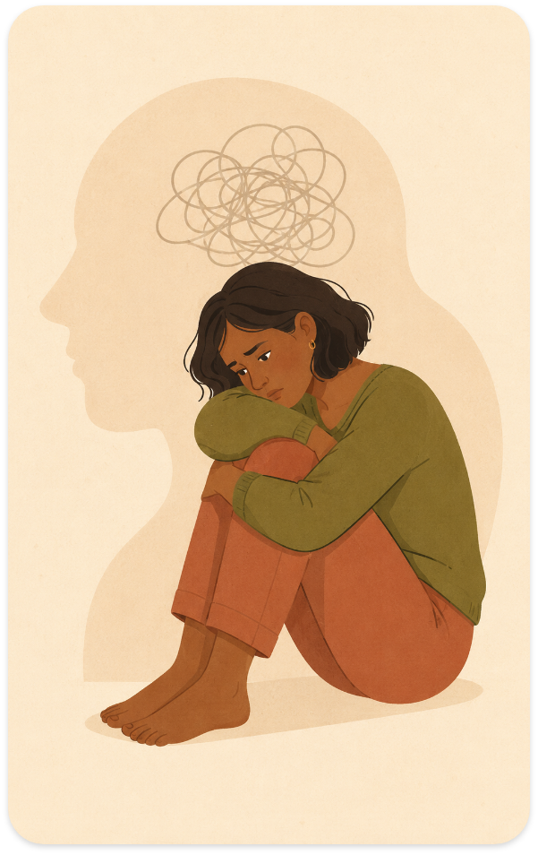
Micro
Marcado por relações de poder assimétricas na família, nos serviços, nas instituições de acolhimento, nas redes de cuidado, onde ele é reiteradamente colocado na posição de objeto de manejo, e não de sujeito de direito.
Nesse ecossistema, coerção, vitimização e vulnerabilização não são exceções, são formas rotineiras de funcionamento.
Clique em cada tema para conhecê-lo:
A tarefa teórico-política – e clínica – que se coloca, portanto, não é apenas “melhorar” a avaliação de risco, nem “treinar melhor” o uso de medidas restritivas, mas superar o paradigma da periculosidade em todas as suas versões, inclusive a versão higienizada da “moderna teoria do risco”. Isso implica deslocar o foco do risco que o “paciente” supostamente representa para o risco que o sistema produz e reproduz sobre ele e, a partir daí, organizar a resposta à crise em chave de hospitalidade e de direitos, e não de contenção.
Intervindo no ecossistema da situação de crise
Neste tópico, abordaremos possibilidades de intervenções para atuações imediatas em situações de crise, considerando o ecossistema dessas situações.
Vale reforçar que estamos tratando de situações e contextos que afetam todas as dimensões da vida de forma intensa, grave e aguda. Segundo o modelo referenciado no texto “Resposta à Crise” (Dell’Acqua; Mezzina, 1991), as dimensões listadas nos números a seguir identificam o sujeito clássico da psiquiatria manicomial: “sujeito perigoso para si e para outrem”.
Passe o mouse nos números para reconhecer tais dimensões:
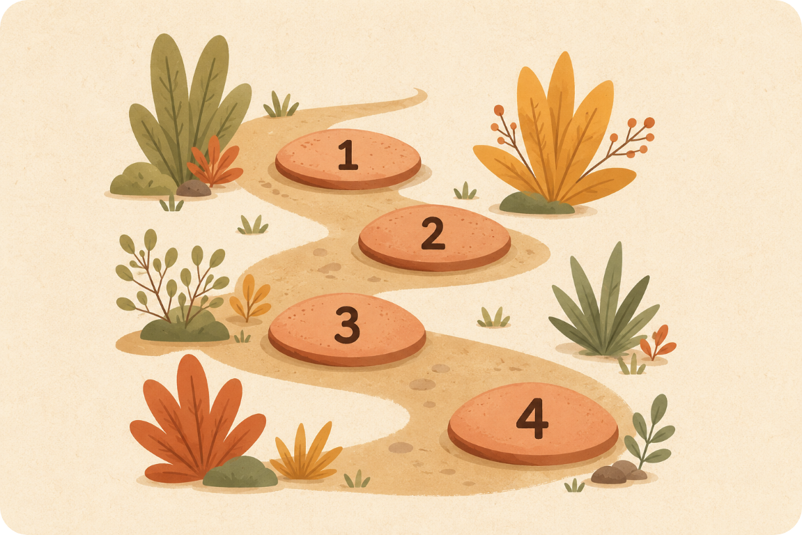
Sintomatologia psiquiátrica grave e/ou aguda; funcional, álcool e drogas, problemas clínicos, multicausal.
Grave ameaça ou ruptura das relações familiares e/ou sociais.
Situação de alarme e risco na rede de familiar e/ou social, incapacidade evidente de enfrentar a crise.
Não aceita tratamento, acha que não precisa, não aceita contato, recusa de contato com equipes de tratamento.
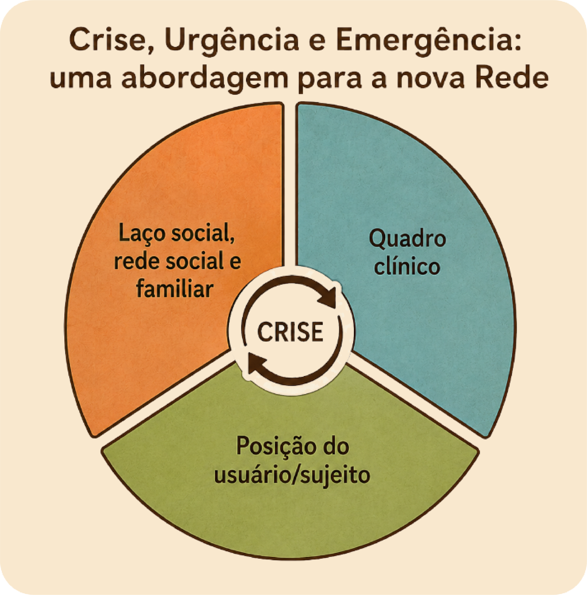
Essas dimensões produziam o veredito clássico da psiquiatria manicomial: “sujeito perigoso para si e para outrem”, internação sumária, muitas vezes a vida inteira.
O movimento de luta antimanicomial e da reforma psiquiátrica produziu, a partir da experiência mundial e de inúmeros estudos, uma inversão dessa caracterização. A expressão das crises nessa modalidade é determinada: dimensões políticas, econômicas, sociais, jurídico-legais atuando interseccionalmente, conforme demonstramos anteriormente, pela produção no nível macro e micropolítico de um “ecossistema biopolítico” de hostilidade, violência, agressividade macro e micro, exclusão, discriminação, estigma e preconceito dirigido ao portador de sofrimento mental.
Esse processo envolve estrutural e institucionalmente a rede social do usuário, os serviços e políticas de saúde, saúde mental e outras, produzindo uma segunda camada de respostas, também, hostis, coercivas e restritivas ao usuário em contato com os serviços.
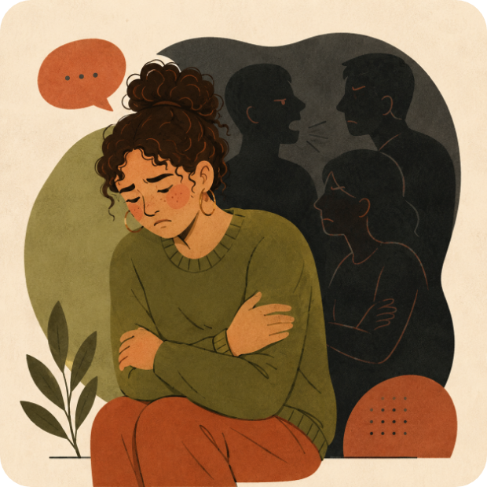
Esse contexto institucional é complexo, dialógico e contraditório, pois comumente as políticas, os serviços e os profissionais professam o acolhimento e a hospitalidade, o cuidado centrado no usuário. O produto dialético da confrontação entre esses vetores gera um quadro micropolítico, um ecossistema biopolítico, que poderia ser nomeado de hostipitalidade. Esse processo nos adverte que a hospitalidade não existe de partida, ela precisa ser coproduzida, construída permanentemente, com os usuários, sua rede social e sob a sua agência e regência. Basaglia era muito consciente da complexidade dessa questão e dos desafios a enfrentar. Em um de seus últimos escritos, advertiu que a caminhada para a desconstrução da biopolítica do manicômio e da exclusão da loucura poderia ser longa e dependeria do grau de ativação possível da participação política e do protagonismo do usuário – desde sua atuação no projeto terapêutico, em sua comunidade, até o desenvolvimento de suportes e recursos comunitários que lhe permitam alcançar a cidadania plena (Basaglia, 1980).
Vejamos intervenções possíveis para o imediato de situações de crise, que levam em conta o ecossistema de cada cena. Começaremos com a entrada em cena e, logo após, a avaliação da situação.
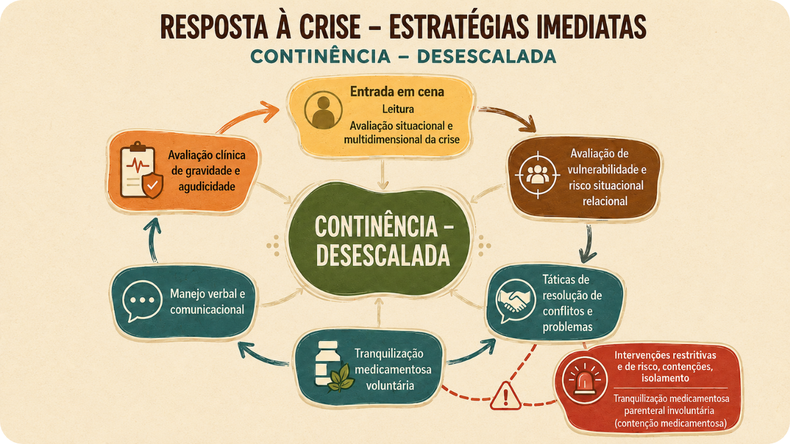
Para conhecer os marcos clique em cada um dos ícones.
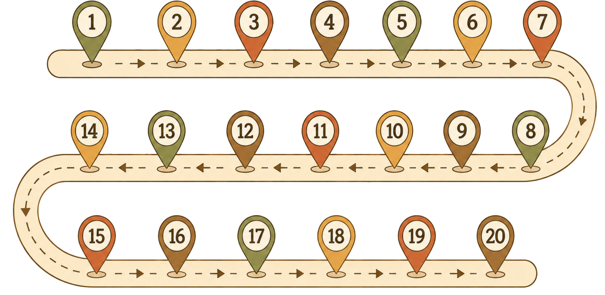
Princípios de método: organizar a cena antes de "resolver o caso": regras básicas
Uma situação de crise é, muitas vezes, uma cena. E uma cena não se resolve apenas com informações, ela se reorganiza com presença, tempo e arranjos. A equipe “chega de fora”, como estrangeira, inclusive quando está no próprio serviço. Essa ideia impede uma arrogância comum: a de supor que o usuário deve se adaptar ao nosso modo de funcionar. Em crise, o modo como entramos é parte do acontecimento. Entrar sem método pode ser o primeiro passo da escalada.
Clique nas imagens e entenda como organizar a cena antes de resolver o caso.
Organizar a cena é um trabalho simples de dizer e difícil de sustentar: definir quem coordena, reduzir o número de falantes, diminuir estímulos, proteger privacidade, garantir rota de saída segura, escolher o lugar do encontro, pactuar próximos passos de curto prazo. Isso é tecnologia clínica. Ao contrário, o medo estreita opções e empurra para soluções rápidas e coercitivas. O método com empatia, ao contrário, cria escolhas.
Há um componente territorial nessa organização. Muitas crises chegam por demanda de terceiros, e o serviço precisa recolher informações para entrar em ação: endereço, acesso, presença de conflito, riscos ambientais. Materiais de equipes de crise reforçam a importância de preparar a entrada. Mas preparar a entrada não é substituir a pessoa por sua “demanda”.
Organizar a cena inclui um gesto de humildade: reconhecer limites. Há crises em que é preciso apoio; há crises em que é preciso reduzir circulação; há crises em que o melhor cuidado é criar espaço de baixa estimulação e garantir presença. Devemos recusar o heroísmo e improviso solitário. A instituição precisa oferecer suporte para que a equipe não caia na tentação da força por exaustão.
A organização da cena também prepara a avaliação. A aula “Nenhum passo atrás” lembra que a avaliação precisa ser um ato de cuidado e de direitos. Isso exige que a cena permita escuta. Se há muita gente, se há ameaça no ar, se há barulho, a escuta vira disputa. Não é raro que a crise comece a ceder apenas porque a equipe conseguiu transformar um caos em uma situação minimamente compreensível. Isso já é cuidado.
Em crise, o serviço costuma carregar urgências administrativas: falta de vaga, falta de equipe, pressão por fluxo. Se essas urgências entram na cena como pressa, a cena piora. O que propomos por “a tempo e junto” é separar temporalidades: a urgência administrativa precisa ser gerida pela coordenação, e a urgência clínica precisa ser acolhida pela equipe com ritmo adequado, para que o usuário não pague a conta do desarranjo institucional.
Por fim, organizar a cena é construir tempo. Em crise, o tempo tende a virar corrida. O método propõe pactos em blocos curtos. “Vamos ficar assim por cinco minutos e reavaliar”; “Vamos ligar para tal pessoa e depois decidir”. Esses pactos devolvem previsibilidade e reduzem medo. A pessoa sabe o próximo passo e não precisa imaginar o pior. Essa previsibilidade, que parece detalhe, é uma das formas mais potentes de desescalada.
Assim, antes de “resolver o caso”, pede que o serviço organize a cena. Não para controlar, mas para cuidar. E cuidar, em crise, começa pela forma do encontro: a forma é parte do conteúdo.
No CAPS III, organizar a cena também significa nomear funções. Um interlocutor de crise, uma referência de enfermagem, alguém responsável por acionar rede, alguém responsável por registrar a síntese, alguém responsável por ambiência. Quando essas funções estão claras, a cena fica menos caótica e a pessoa sente menos ameaça. Crises graves exigem coordenação de um trabalho coletivo. E coordenação precisa ser visível: a equipe deve dizer quem está conduzindo, e deve manter essa condução estável. Mudanças constantes de condução aumentam insegurança. A estabilidade, mesmo breve, é forma de continência.
a. É necessário reconhecer, em primeiro lugar, que chegamos de fora, somos estrangeiros em relação à cena, não apenas quando abordamos na rua ou no domicílio. Assim, o encontro é imprevisível, inclusive porque a demanda em saúde mental, particularmente na crise, costuma ser feita por outrem, um familiar, às vezes sem comunicação prévia ao portador de sofrimento mental.
b. Os sujeitos em crise podem estar vivenciando experiências psicopatológicas extremas de invasão do seu espaço, da sua mente e do seu corpo, um contexto comum da nossa atuação, o que exige cuidado, sensibilidade e delicadeza para não sermos mais um “invasor”.
c. É preciso recolher todas as informações possíveis para caracterizar a demanda e aquelas necessárias para entrar em ação (território, vias de acesso, endereço etc.), principalmente se for um atendimento domiciliar ou de rua (Hoult; Cotton, 2008). Certificar-se do pedido de ajuda, caracterizá-lo, saber quem o acionou, quais são os informantes-chave e quem é nomeado como o portador da crise.
d. Ao iniciar a abordagem, seja na planta de um serviço de saúde, seja em qualquer local de atendimento, fazer a identificação do serviço e da equipe (nome dos profissionais, função).
e. Identificar o portador de sofrimento mental e as pessoas de referência dentro da rede familiar e social.
f. O membro mais experiente da equipe deverá coordenar as ações e estabelecer o diálogo. Atenção para o fluxo das emoções, dos afetos e dos processos de vinculação do usuário. Eles podem oscilar ou modificar ao longo da abordagem, a ponto de requisitar a mudança de interlocutor.
g. Atuar como equipe, a coordenação das ações e o treinamento prévio serão vitais. Ações isoladas devem ser bem calculadas, nunca se deixando um membro da equipe sozinho, por exemplo, com alguém escalando para a violência.
h. Lembrar que, em razão da complexidade das crises, independentemente da quantidade de informações e experiência que uma equipe tenha, a cena local será, muitas vezes, surpreendente, exigindo de nós flexibilidade e inovação.
Avaliação
A avaliação de uma situação de crise em saúde mental exige da equipe um olhar que articule, ao mesmo tempo:
- a singularidade da experiência subjetiva;
- o que se repete como produção social do sofrimento; e
- os dados clínicos objetivos que pedem resposta imediata.
É preciso compreender como a crise se inscreve na continuidade da vida da pessoa, de sua rede e do território, em diálogo com o que será desenvolvido no capítulo das estratégias indiretas. Ao estar com a pessoa usuária e sua rede, os efeitos diretos e indiretos desse encontro são base para a construção de um PTS. Assim, cuidar e avaliar se tornam o mesmo movimento. Avaliar é parte do cuidado, e cuidar é, também, uma forma de avaliar: a cada gesto no acompanhamento de alguém em crise, formulamos hipóteses sobre o que sustenta sua vida, sua rede de “trocas materiais e simbólicas” (Saraceno, 1999; Kinoshita, 1996).
O trabalhador deve estar atento não apenas a sinais e sintomas, mas também aos marcadores sociais que produzem subjetividade – racismo, transfobia, sexismo, pobreza, etnia. Eles não são periféricos: muitas vezes constituem o núcleo que organiza o sofrimento e a forma como ele aparece. Escutar a crise é escutar a dor do ser no mundo, atravessada por relações de poder que a produzem e a sustentam.
Para conhecer a história de Dona Olga e Marta, navegue nas abas laterais do carrossel.
Essa cena, inspirada em situações reais vividas em CAPS, nos coloca diante da complexidade da crise: não apenas a intensificação de sintomas, mas um acontecimento que suspende o cotidiano e reorganiza a vida. A experiência de sofrimento psíquico intenso é sempre singular; nosso trabalho é nos debruçar sobre essa singularidade para identificar problemas vividos e construir saídas igualmente singulares, sem dar nenhum passo atrás na garantia de direitos, sem transformar a crise em perda de autonomia ou em novas violências institucionais.
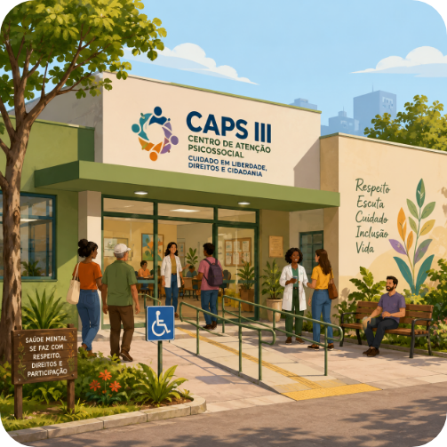
Nos últimos dias, Marta, mulher trans preta, frequentemente alvo de discriminações, não dormia, dizia ouvir vozes que ninguém mais escutava, recusava-se a se alimentar e repetia que queriam matá-la.
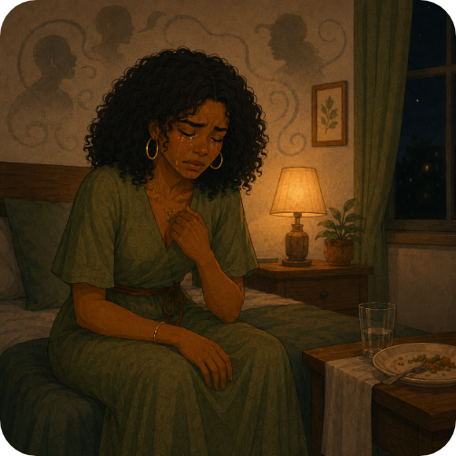
Enquanto a mãe relatava sua aflição, era possível vê-la sentada no sofá da sala escura, cercada por uma Bíblia aberta, um copo com água e uma vela acesa. Esses objetos, numa imagem simples e potente, indicavam um modo de resistir frente a um mundo que a fere cotidianamente.
O cheiro começa a incomodar o profissional também, então ele diz, cheio de coragem e do jeito mais acolhedor que conseguiu: – Jaílson, estou sentindo um cheiro, acho que é da sua roupa. Não deu para usar a máquina de lavar na pensão? Jaílson diz, um pouco envergonhado, que “não” e pergunta se está muito forte.
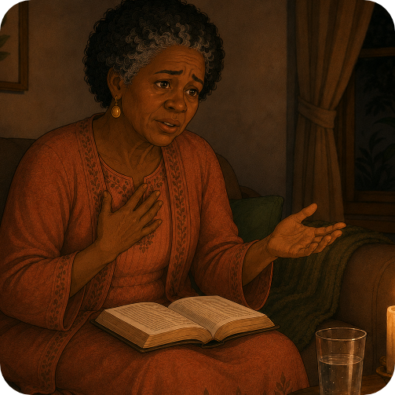
Em linhas gerais, a avaliação da crise pode se organizar em dois cenários:
1. Encontro com sujeitos e contextos ainda desconhecidos, que exige postura investigativa, acolhimento e construção rápida de vínculo e confiança.
2. Acompanhamento em territórios/serviços, em que a convivência contínua permite perceber precocemente mudanças às vezes sutis.
No caso de Marta e Olga, estamos no segundo cenário: cuidado territorial que vê a crise não como ruptura isolada, mas como expressão de vínculos, redes e histórias atravessadas por desigualdade e exclusão. É nesse chão que respostas singulares ganham sentido e potência.
A avaliação, nesse sentido, não é ato pontual, mas processo vivo tecido nos encontros sucessivos entre equipe, usuária e rede social. Ainda assim, o primeiro gesto é decisivo: responder “a tempo e junto”, como propõem as experiências de Trieste (Itália), Open Dialogue (Finlândia) e as diretrizes do NICE (NHS – Reino Unido). O NICE CG136 recomenda que o primeiro atendimento ocorra em até quatro horas após o pedido de ajuda: não apenas um parâmetro técnico, mas ético. A urgência do cuidado é também urgência de reconhecimento e de proteção contra novas violações.
Para Olga, o sofrimento está na ameaça de perder a filha e, com ela, o vínculo que as mantém vivas. Para Marta, não se trata apenas de delírios ou alucinações, mas do desmoronamento de um mundo simbólico já frágil, atravessado por violências estruturais Violências estruturais: Violências estruturais são formas de sofrimento e dano que não acontecem só como agressão direta, mas são produzidas e mantidas por desigualdades e instituições: pobreza persistente, insegurança alimentar, moradia precária ou ameaça de despejo, racismo, violência de gênero, trabalho informal/exploração, criminalização do território, barreiras de acesso a políticas públicas, e violência institucional (humilhação, negligência, “porta fechada”, respostas coercitivas). Na lógica do QualityRights, isso aparece como violação ou fragilização de direitos que precisam entrar no centro da avaliação e do plano: o direito a um padrão adequado de vida, o direito de viver na comunidade com inclusão e a proteção contra violência/abuso – além do enfrentamento de estigma e discriminação que atravessam os serviços e a vida cotidiana. . A escuta, aqui, articula dimensões clínicas, subjetivas e sociais: compreende o que precipitou a crise, quais apoios permanecem e o que falta para sustentar a existência.
A avaliação deve ser feita com consentimento livre e esclarecido, percorrendo etapas como:
- escuta da queixa inicial;
- histórico clínico e psicossocial;
- exame físico e mental;
- diagnóstico diferencial;
- diagnóstico diferencial;
Tudo isso de forma vigilante, para que nenhuma etapa legitime práticas coercitivas e produza novas formas de silenciamento. O consentimento livre e esclarecido é a regra, mas há situações em que a capacidade decisória pode estar temporariamente comprometida (por exemplo, em quadros psicóticos graves com desorganização intensa, delirium ou intoxicações), quando a pessoa não consegue compreender informações essenciais, ponderar consequências e/ou expressar de forma consistente uma escolha. Nesses casos, a equipe deve agir pelo princípio da necessidade e da proteção, pois cuidado em liberdade não é omissão de socorro. No entanto, devem ser adotadas medidas proporcionais, mínimas e que possam ser revisadas o mais rápido possível, buscando sempre substitutos menos restritivos e retomando o diálogo, abrindo a negociação e a busca por consensualidade, imediatamente.
ACENA - ferramentas para leitura de cena
O olhar clínico se expande para além do indivíduo: observa ambiente, relações, objetos e rede de apoio, compondo o que a UNA-SUS (2014) dispõe como avaliação da cena. Somado ao mhGAP (OMS), temos instrumentos úteis para a “caixa de ferramentas” do cotidiano. Em contextos como o de Olga e Marta, isso implica identificar riscos e vulnerabilidades sem perder de vista os marcadores sociais, garantindo que cada decisão seja também proteção de direitos.
Clique em cada letra e reconheça as cinco dimensões de avaliação da cena:
A – Ambiente
- Analisar território, moradia e arredores.
- Identificar riscos concretos (meios de suicídio, armas, intoxicações, sinais de negligência).
- Incluir determinantes sociais: condições de moradia, racismo territorial, precariedade dos serviços públicos, acesso à renda.
Exemplo: Quais são as condições da moradia de Dona Olga e Marta? Como suprem necessidades básicas? Quais redes de confiança existem (familiares, coletivos, vizinhos, movimentos sociais)?
C – Crise e conflito
- Avaliar relações familiares e sociais, presença de apoio ou hostilidade.
- Reconhecer histórico de violência, discriminação e exclusão (racismo, transfobia, violência policial).
- Investigar a trajetória de vida e como o conflito atual se relaciona com essa trajetória.
- Em crianças e adolescentes: investigar vínculo com cuidadores e impacto de contextos de violência estrutural (escola, comunidade, instituições).
E – Entrada da equipe
- A forma como a equipe chega à cena é parte constitutiva da crise.
- Perguntar-se: estamos chegando como cuidadores ou como agentes de controle?
- Comunicação clara, sem julgamentos, validando identidades (nome social, gênero, pertencimento étnico-religioso). O mhGAP recomenda escuta ativa, empatia e flexibilidade.
N – Nível de consciência
- Observar estado clínico-neurológico (alerta, desorientação, rebaixamento, febre ou confusão mental).
- Compreender como usuário e rede nomeiam e interpretam o que acontece.
- Incluir avaliação clínica e física, sem reduzir a experiência de vida e do sofrimento ao diagnóstico biomédico.
- Para equipes com formação clínica (médicos e enfermagem intensivista), pode ser útil registrar o nível de consciência também por uma escala padronizada, como a Escala de Coma de Glasgow (ECG), especialmente quando há rebaixamento, confusão importante, intoxicação, trauma, crise convulsiva ou suspeita de delirium. A ECG ajuda a comunicar gravidade e evolução entre plantões e serviços, mas não substitui a escuta do sentido da crise para o usuário e sua rede, nem autoriza reduzir a experiência a um marcador biomédico.
Exemplo: Marta tem consciência da própria vulnerabilidade e o que está acontecendo com ela. Como isso se traduz em risco e em estratégias de cuidado?
A – Agressividade, autoagressão e álcool/drogas
- Investigar violência sofrida ou cometida, ideação suicida ou automutilação.
- Identificar o uso de substâncias (álcool, crack, drogas ilícitas) sem estigmatizar.
Seikkula, psicólogo que ajudou a desenvolver a prática do Diálogos Abertos na Finlândia, lembra que agitação, ruptura do discurso linear ou agir corporal intenso costumam ser respostas a um sofrimento que ainda não encontrou palavras. Uma boa avaliação precisa escutar as diversas vozes presentes na cena. Para negros, indígenas, pessoas trans, população em situação de rua, é preciso ouvir.
Encontre os pares corretos das cartas para identificar os principais grupos em situações de vulnerabilidade e como ajudá-los.
Texto do par: Texto deste par será inserido depois.
Avaliação antirracista e viés diagnóstico
A escuta radical exige implicação afetiva e coragem institucional. Avaliar não é só medir, mas é entrar na cena do outro; não é classificar, mas restituir humanidade em um cenário de desentendimento.
Marta é uma mulher trans preta. O trabalho de cuidado com Marta exige atenção redobrada para que não seja reproduzido o sistema racista e cisnormativo que empurra os mais vulneráveis para rotas de exclusão. Aqui é necessário reconhecer racismo estrutural, mas também considerar como gênero, identidade de gênero e raça se articulam na produção do sofrimento psíquico e na forma como ele é lido institucionalmente.
Isildinha Baptista Nogueira (2021) mostra como o sofrimento psíquico de pessoas negras é frequentemente lido como descontrole ou periculosidade, apagando o trauma racial que o sustenta. Neusa Santos Souza (2021) aponta que, para sobreviver, o negro muitas vezes é levado a negar-se enquanto negro, processo ao mesmo tempo psíquico e social, produtor de adoecimento. Lélia Gonzalez (1984) denuncia como o racismo naturaliza o medo do outro racializado.
Na fala “todos somos atravessados pelo racismo; a questão é como cada um é atravessado”, Isildinha Nogueira desloca o racismo do campo da opinião individual para o campo das relações, dos afetos e das instituições (Entrevista, 2023).
Nesse âmbito, sugerimos você assistir à entrevista de Isildinha para a Revista Traço, disponível em: https://www.youtube.com/watch?v=vLx3Zh-0UZc&t=891s.
Clique nas setas para saber o que algumas pesquisas (Bazargan-Hejazi et al., 2023; Eack et al., 2012; Schwartz et al., 2019; Strakowski et al., 1996) apontam.
O diagnóstico de esquizofrenia entre pessoas pretas frequentemente reflete um viés sistemático Viés sistemático: desvio não aleatório que faz com que, em pessoas pretas, sinais afetivos sejam subpesquisados e sinais psicóticos supervalorizados. , mesmo após controle de variáveis clínicas e sociais.
Instrumentos padronizados ajudam, mas não eliminam o viés: o ato clínico (interpretação, relação, julgamento) continua sendo crucial.
A percepção de honestidade ou confiabilidade do paciente (influenciada por estereótipos raciais) pode interferir fortemente no diagnóstico.
Sintomas psicóticos são privilegiados na avaliação, enquanto sintomas afetivos ou depressivos podem ser ignorados ou subdiagnosticados em pacientes negros.
Sintomas psicóticos são privilegiados na avaliação, enquanto sintomas afetivos ou depressivos podem ser ignorados ou subdiagnosticados em pacientes negros.
O viés diagnóstico pode ter consequências graves: tratamentos inadequados, prognóstico pior, reforço do estigma e redução da esperança terapêutica.
Território, cultura e bem viver
Também é essencial considerar especificidades territoriais e culturais, como as populações dos Campos, das Florestas e das Águas. Dinâmicas culturais formam subjetividades e ampliam nossa capacidade de avaliar, manejar e cuidar de modo inclusivo, ético e em diálogo intercultural. Em muitos povos indígenas no Brasil, por exemplo, a ideia de “bem viver” se aproxima do que chamamos de saúde mental: viver em relação consigo, com a comunidade, com a espiritualidade, com a natureza e com as ancestralidades.
Clique na imagem e aprofunde a reflexão sobre fundamentos práticos para transformar a avaliação em gesto ético-político de cuidado, orientado por direitos, singularidade e rede.
Para aprofundar a reflexão, sugerimos que você assista ao vídeo “Horizontes da Psiquiatria: diálogos entre clínica, política e subjetividade” (clique aqui), que articula críticas centrais e propõe uma prática integrativa, não reducionista, alinhada à RAPS. O encontro reforça que transtornos devem ser compreendidos como tipos práticos situados em corpos, histórias e territórios; que evidências são atravessadas por valores e narrativas; e que decisões clínicas precisam reconhecer e reduzir coerções (inclusive as informais). A partir dessas chaves, você pode qualificar a leitura de cena do cuidado e refletir que saberes estão em jogo (ACENA). Em suma, o vídeo oferece fundamentos práticos para transformar a avaliação em gesto ético-político de cuidado, orientado por direitos, singularidade e rede.
Na fala “todos somos atravessados pelo racismo; a questão é como cada um é atravessado”, Isildinha Nogueira desloca o racismo do campo da opinião individual para o campo das relações, dos afetos e das instituições (Entrevista, 2023).
Você nomeou e enfrentou marcadores sociais (raça, gênero, território) sem patologizar?
Identificou e reduziu coerções (formais e informais) nas decisões?
Registrou efeitos do que fez e combinou revisão com a pessoa ou a rede?
Transformou as respostas das perguntas anteriores em passos concretos no PTS?
Observações sobre risco
Desde o nascimento da psiquiatria, a figura do “louco perigoso” serviu como eixo moral e político para justificar o confinamento. Historicamente, a solução hegemônica para a imprevisibilidade da loucura foi internar em asilos, apresentada como medida de segurança social (Foucault, 2019).
A política da confiança é o antídoto à gestão do risco pelo controle. O desafio ético é reconstruir o sentido de avaliação como encontro e corresponsabilidade, não como triagem de perigos. Porque, no fundo, o verdadeiro risco é aquele de não escutar. E, quando a escuta se cala, o manicômio retorna, não em muros, mas em protocolos.
A avaliação em crise deve sempre considerar o risco de suicídio e autoagressão, sem reduzir a cena a protocolos de contenção. É fundamental que cada dimensão do ACENA seja lida à luz dos direitos humanos, do reconhecimento de identidades e antirracista. Nikolas Rose (1998) observa que, nas últimas décadas, a noção clássica de periculosidade foi substituída por um léxico aparentemente neutro: baixo, médio ou alto risco. Contudo, a função política permaneceu a mesma: deslocar o foco do cuidado para o controle preventivo. A psiquiatria deixa de tratar a doença para administrar condutas e prevenir eventos futuros.
Dito isso, clique nos termos a seguir a fim de ficar atento a sinais que alertem para:
Não se infere só pela fala explícita. Consideram-se a cena (afetos, impulsividade, acesso a meios), a trajetória (histórico de tentativas, perdas recentes, uso de substâncias) e a rede (apoios, conflitos, presença/ausência de cuidadores). Valorize múltiplas vozes (usuário, família, equipe) e registre incertezas e fatores protetivos.
O perigo não está apenas “no sujeito”: pode ser produzido ou agravado por contextos e respostas da rede (encaminhamentos excessivos e pouco responsáveis), violência doméstica, racismo, pobreza, ameaça de despejo, policiamento, bem como práticas coercitivas (contenções indevidas, internações compulsórias, rupturas de vínculo). Avalie sempre se a intervenção proposta reduz dano ou pode aumentá-lo, e se diminui ou aumenta a exclusão.
Cada decisão deve equilibrar proteção e liberdade, com medidas proporcionais, mínimas e reversíveis. Priorize pactos de cuidado e planos de segurança com o usuário e sua rede; privilegie recursos comunitários bem antes de práticas coercitivas; estabeleça reavaliações frequentes; documente claramente o raciocínio risco-benefício e os critérios para avançar ou recuar nas medidas.
Observações sobre risco
Em outra “cena”, em algum ponto deste país de dimensões continentais: são quase nove da manhã quando a equipe do CAPS AD recebe uma ligação da UBS do território.
Para conhecer a história de Rafael, clique em cada ícone de áudio ou acesse a transcrição aqui.
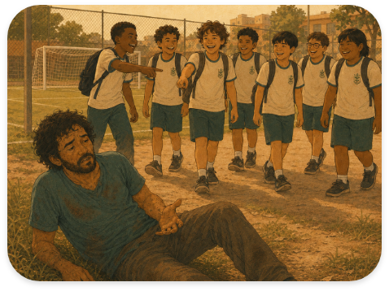
William chega ao CAPS na hora do almoço depois de meses sumido. Anda rápido e impaciente, reclamando que o serviço não serve para nada. Magda, a referência, é chamada mesmo estando em atendimento com uma família. Irrita-se e diz que outras pessoas podem lidar com William também, que ele usa crack, mas não morde.
Mariana, de plantão, concorda, mas não sabe muito bem como proceder, e os outros profissionais passam a fingir que não estão ouvindo a gritaria. Mariana lembra da supervisão em que discutiram William, agora se enche de coragem e quer tentar resolver a situação com o usuário. Andando até ele, vai pensando em como começar uma conversa sem que aumente o nível de tensão e ele comece a gritar e puxar briga.
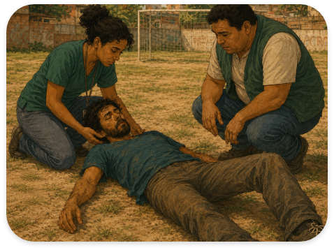
Nos poucos segundos que andou, visto que o CAPS é pequeno, chega bem perto do usuário, firme, mas delicadamente sorri. William se surpreende e Mariana pergunta se ele pode ajudá-la a fazer o café e colocar a conversa em dia.
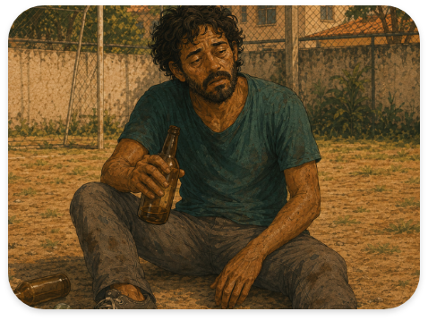
A ação de Mariana não dá muito certo de primeira, William volta a gritar e, agora no ouvido dela, diz que não é criança para aceitar comida e calar a boca. Gislene, lá da cozinha, vai espiando de rabo de olho.
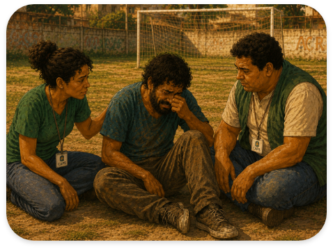
Mariana tenta de novo, mas agora foca mais no que ele está dizendo e sugere que, enquanto fazem café, ele fale da reclamação em relação ao CAPS, e se preparem para quando o gerente chegar da reunião para a qual foi.
A história de Rafael ilustra a complexidade do cuidado em situações de uso de álcool e outras drogas, quando a avaliação precisa ir além do sintoma imediato e incluir aspectos clínicos, subjetivos e sociais. Segundo o mhGAP, a abordagem inicial deve contemplar alguns passos fundamentais: verificar se há sinais de intoxicação aguda, abstinência ou complicações clínicas graves (alteração de consciência, trauma físico, risco cardiovascular, suspeita de encefalopatia); avaliar o risco de violência para si ou para outros, bem como a possibilidade de comportamento suicida; compreender o padrão e o contexto do uso de substâncias; e considerar os fatores psicossociais, como vínculos familiares, situação de moradia e inserção comunitária.
Clique na prancheta para conhecer uma análise do caso de Rafael.
No caso apresentado, Rafael é encontrado em situação de vulnerabilidade no campo de futebol, exposto no território e em condição de possível intoxicação, sob o olhar dos moradores e das crianças que passam. Sabemos que, muitas vezes, esses elementos podem desencadear violência por parte da população, seja por medo, preconceito ou pelo lugar social atribuído aos usuários que fazem uso frequente de drogas. A equipe ou profissional que se depara com essa cena precisa, ao mesmo tempo, avaliar as condições clínicas do usuário e o clima em volta dele, compreender seu papel de responsabilidade sanitária, mediar conflitos e saber como manejar riscos sem que sua entrada na cena produza ainda mais resistência ou estigmatização. Tarefa complexa, mas que, com o tempo, vai ficando cada vez mais bem feita e atenta.
Nesse exemplo, a equipe opta por não iniciar com perguntas diretas ou intervenções exclusivamente medicalizantes, mas sim por se sentar ao lado dele, compartilhar o espaço e oferecer um caminho concreto: voltar para a casa da avó. Trata-se de uma postura de comunicação empática, sem julgamento moral, baseada na escuta e no reconhecimento do sofrimento, mesmo enquanto se mantém, em segundo plano, a vigilância para sinais de gravidade clínica que indiquem a necessidade de acionar a urgência hospitalar.
A atitude da técnica de referência e do agente comunitário de saúde mostra como a avaliação clínica pode se articular com um cuidado relacional. Ao mesmo tempo que se observa a necessidade de atenção ao risco clínico e social, busca-se construir uma contratualidade mínima com Rafael, por meio da presença, do respeito ao seu tempo e do resgate de vínculos significativos. Assim, a avaliação da cena não se reduz ao consumo de substâncias, mas abarca o cotidiano em deslocamento, o vínculo com a avó e o lugar do CAPS como ponto de apoio e de retorno possível.
A avaliação em saúde mental, no contexto do uso de drogas, precisa sustentar essa articulação entre a detecção de riscos imediatos (incluindo possíveis complicações clínicas, como a encefalopatia de Wernicke) e a reconstrução de pertencimentos. A pergunta final – “Quer voltar para a casa da vó?” – mostra como um gesto simples pode instaurar um espaço de cuidado que reduz danos, protege e, ao mesmo tempo, abre caminho para a continuidade do acompanhamento, seja no CAPS, na UBS ou em outros pontos da rede.
Clique em cada um dos numerais para refletir sobre a história de Rafael.
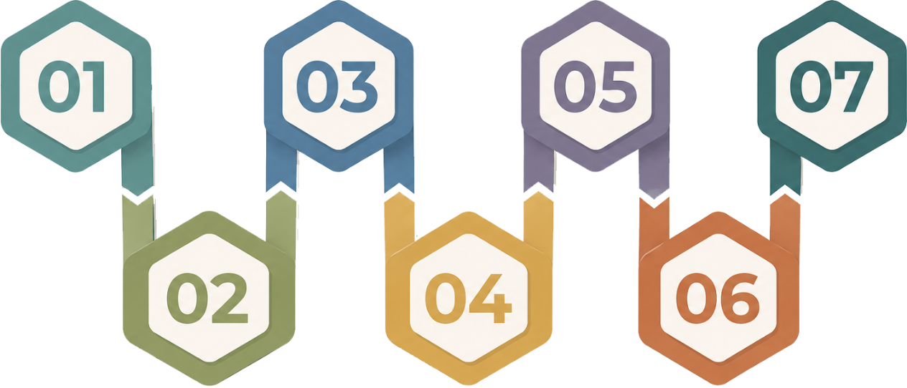
Quais sinais clínicos imediatos (intoxicação, abstinência, trauma, risco físico) precisam ser avaliados em Rafael?
De que modo a equipe avaliou o risco de violência, autoagressão ou exposição social? Como essa avaliação poderia ser ampliada?
De que modo a equipe avaliou o risco de violência, autoagressão ou exposição social? Como essa avaliação poderia ser ampliada?
De que modo a equipe avaliou o risco de violência, autoagressão ou exposição social? Como essa avaliação poderia ser ampliada?
Que recursos de rede (família, CAPS, UBS, vizinhos) podem ser acionados para sustentar o cuidado de Rafael?
Como transformar a cena de agitação e vulnerabilidade pública em uma oportunidade de redução de danos e de reconstrução de pertencimentos?
Quais seriam os próximos passos para o CAPS acompanhar Rafael, sem perder a dimensão do risco clínico, mas também sem reduzir sua vida ao diagnóstico de dependência?
A importância das condições médicas e dos problemas relacionados ao álcool e outras drogas
Conforme vem sendo destacado neste módulo, a avaliação de uma situação de crise exige atenção a múltiplas dimensões que determinam, precipitam e modulam o sofrimento, articulando aspectos subjetivos, sociais e clínicos. A figura seguinte busca sintetizar essa leitura ampliada. Ainda assim, entre os vários eixos que compõem a cena, as condições médicas e neurológicas ocupam lugar particular: podem definir condutas imediatas e, em situações extremas, decidir desfechos de vida ou morte. Observe a imagem.
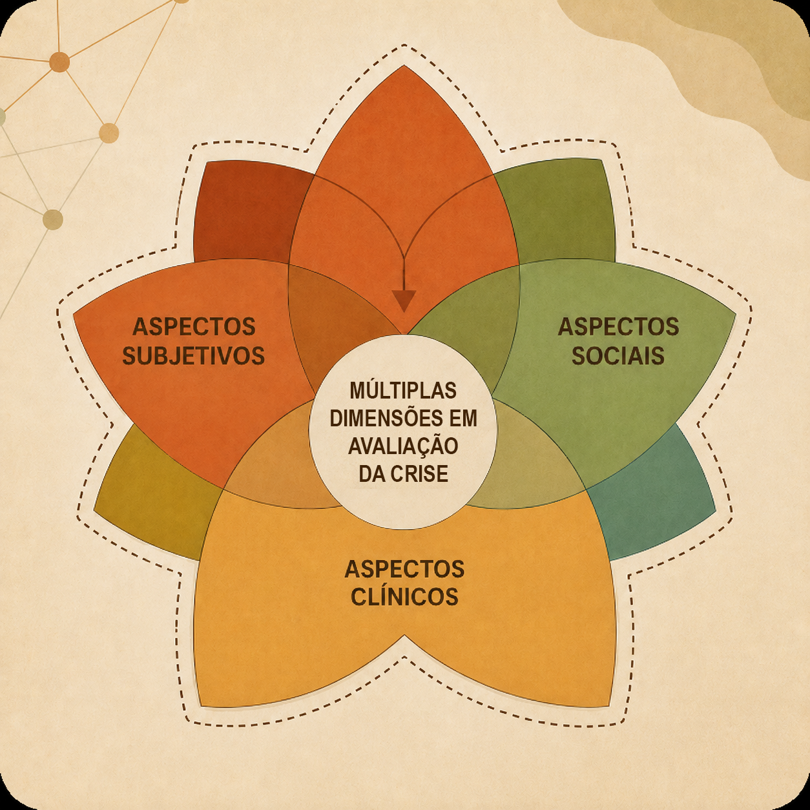
Uma variedade de condições médicas é capaz de produzir uma apresentação de urgência psiquiátrica, inclusive com quadros muito parecidos aos transtornos psiquiátricos clássicos (Lukens et al., 2006; Cresswell III, Riccio, Maccabe, 2008; Karas, 2002; Bozada; Zun, 2021; Thomas, 2023). Diversas doenças da clínica geral e da neurologia, intoxicações por medicamentos e por substâncias psicoativas, assim como condições fisiológicas alteradas, podem gerar sintomas psiquiátricos agudos indistinguíveis, ou muito semelhantes aos quadros primariamente psiquiátricos. Quando presentes em comorbidade, atuam como modificadoras da apresentação (gravidade, agudicidade e complexidade), elevando, ao menos, o sofrimento, o desconforto e o risco clínico e social associados à crise.
Entre as condições mais frequentes nesse contexto, destacam-se: intoxicação e síndrome de abstinência por álcool e outras drogas; alterações metabólicas (por exemplo, hipoglicemia e hiperglicemia no diabetes); doenças cardiovasculares; disfunções endócrinas (hipo/hipertireoidismo, entre outras); distúrbios hidroeletrolíticos; infecções (incluindo sistema nervoso central, respiratórias e urinárias); infecção pelo HIV; condições neurológicas; traumas e acidentes vasculares cerebrais.
Clique nas categorias a seguir para conhecer exemplos das principais condições médicas associadas a sintomas psiquiátricos ou comportamentais agudos.
Intoxicação por álcool e outras drogas (cocaína/crack, cannabis, estimulantes/anfetaminas etc.); síndrome de abstinência (especialmente álcool e sedativos/hipnóticos); efeitos adversos ou intoxicação por medicamentos (antidepressivos tricíclicos, antipsicóticos, lítio, benzodiazepínicos, anticonvulsivantes, esteroides etc.).
Pneumonia, infecção do trato urinário, sepse, sífilis.
Hematoma subdural, tumores cerebrais, hemorragia subaracnóidea, encefalopatia hipertensiva, meningite, crises epilépticas, enxaqueca complexa.
Hematoma subdural, tumores cerebrais, hemorragia subaracnóidea, encefalopatia hipertensiva, meningite, crises epilépticas, enxaqueca complexa.
Arritmias, infarto agudo do miocárdio, insuficiência cardíaca congestiva descompensada, DPOC/asma com hipóxia.
Vasculites, anemia, lúpus, sarcoidose.
Estudos que investigaram situações em que problemas clínicos foram causa direta ou tiveram participação relevante na apresentação de urgência psiquiátrica descrevem frequências amplas, variando conforme população, critério e cenário assistencial (Bozada; Zun, 2021). Independentemente da amplitude desses achados, a implicação prática é consistente: em crises atendidas no território, na porta de urgência ou em serviços 24h, a hipótese de condição orgânica associada deve permanecer ativamente considerada, e não apenas “descartada” por impressão inicial.
Essa vigilância clínica ganha peso adicional quando se observa a carga epidemiológica desproporcional que incide sobre pessoas com sofrimento mental. Isso quer dizer que as pessoas que têm questões psicossociais têm maior probabilidade de apresentar doenças clínicas: maior prevalência de doenças infecciosas e agravos associados à precariedade de vida; maior morbimortalidade por causas externas (acidentes e violências); e maior prevalência e mortalidade por condições cardiometabólicas e outras “doenças da modernidade”, frequentemente em patamares superiores aos da população geral. O resultado se expressa em mortalidade prematura relevante, descrita em faixas de 15 a 20 anos em diferentes estudos, inclusive em países de alta renda (Harris; Barraclough, 1998; Allebeck, 1989; De Hert et al., 2011a; De Hert et al., 2011b; Laursen et al., 2014). Esse cenário sustenta a noção de “gap de cidadania”, na medida em que o acesso ao cuidado clínico oportuno e equânime permanece sistematicamente fragilizado.
No cotidiano das urgências, uma das expressões mais concretas dessa desigualdade é o apagamento do risco clínico por “rótulo psiquiátrico”: a informação de diagnóstico em saúde mental, o relato de uso de psicotrópicos ou o simples vínculo prévio com serviço especializado podem produzir barreiras de acesso, avaliações abreviadas e encaminhamentos automáticos que subestimam condições orgânicas graves como causa ou agravante do quadro.
Comorbidade e prevalência cruzada: por que isso importa na urgência?
No campo clínico-epidemiológico, comorbidade refere-se à presença simultânea de dois ou mais transtornos/condições em uma mesma pessoa. Já a prevalência cruzada expressa o grau de sobreposição entre dois conjuntos diagnósticos: por exemplo, a proporção de pessoas com transtorno mental que também apresenta transtorno por uso de substâncias, e vice-versa. No caso de álcool e outras drogas, essa sobreposição é historicamente alta e foi descrita desde estudos epidemiológicos clássicos (Regier et al., 1990). Em termos de rede, isso ajuda a explicar a demanda, a recorrência de atendimentos e a complexidade das urgências. Para melhor visualizar e orientar a organização assistencial, a seguir, são apresentados os modelos do “quadro quadrantes” (McDonell et al., 2012).
Do ponto de vista clínico, problemas relacionados ao uso de substâncias podem mimetizar praticamente qualquer síndrome psiquiátrica, complicar apresentações e, por vezes, precipitar descompensações. Quando associados a transtornos mentais (comorbidade), aumentam procura e revisitas em urgência e tendem a elevar gravidade, urgência e dificuldade de manejo (Curran et al., 2004).
Território, cultura e bem viver
Retomando o caso de Rafael, com uso intenso e prolongado de álcool, períodos de ingesta contínua, emagrecimento e sinais de comprometimento global, a hipótese de “apenas embriaguez” é insuficiente. Em contextos assim, deve-se considerar complicações clínicas graves, como a encefalopatia de Wernicke, um estado confusional agudo, frequente em dependentes graves, relacionada à deficiência de tiamina, descrita com mortalidade relevante (Sechi; Serra, 2007).
A tríade clássica (alteração do estado mental com rebaixamento do nível de consciência Rebaixamento do nível de consciência: alteração aguda do estado mental, podendo incluir letargia, sonolência anormal, confusão, delirium, apatia e redução da responsividade, com ou sem flutuações ao longo do tempo. , ataxia e alterações oculomotoras) pode não estar completa; basta a presença de um desses sinais, ou ainda distúrbios de memória, hipotensão, hipotermia ou coma em um dependente grave e desnutrido para que se suspeite de Wernicke (Caine et al., 1997; Sechi; Serra, 2007).
Entre sobreviventes, há risco de evolução para síndrome de Korsakoff, com prejuízo importante de memória (Victor; Adams; Collins, 1971). Nessa cena, torna-se decisivo acionar recursos de rede (UPA/hospital geral, SAMU quando indicado), articular enfermagem e médicos para avaliação clínica imediata e garantir intervenções proporcionais, sem nunca perder de vista o vínculo e a contratualidade do cuidado territorial, nossas grandes ferramentas de trabalho.
Diante dessa possibilidade, como a equipe deveria proceder? Que avaliações clínicas iniciais seriam indispensáveis e quais recursos da rede (por exemplo, pronto atendimento, hospital geral, suporte de enfermagem e medicina, suplementação de tiamina) deveriam ser acionados?
O quadro a seguir traz um roteiro de avaliação com elementos importantes consolidados pela literatura clínica (Cresswell III, Riccio, Maccabe, 2008; Karas, 2002; Dubin, Weiss, Zeccardi, 1983; Williams et al., 2003; Talbot-Stern, Green, Royle, 2000; Bozada; Zun, 2021; Thomas, 2023) que podem ajudar a diferenciar uma condição ou patologia orgânica de um transtorno psiquiátrico, quando estamos diante de uma apresentação de urgência.
O quadro nos ajuda a ter uma noção geral referente aos elementos mais importantes para o diagnóstico, porém uma regra básica e simples poderá nos orientar, qual seja:
Diante de uma crise, no contexto das urgências, a despeito de uma origem psiquiátrica parecer de imediato como provável, é de boa regra colocá-la sob suspeita e fazer uma avaliação, a mais completa possível, não se esquecendo do peso da história, do exame físico e da coleta dos dados vitais, os quais continuam sendo os elementos mais importantes para o esclarecimento diagnóstico.
Quanto a essa questão, os profissionais da enfermagem têm um papel muito importante. São eles que normalmente nos alertam para os problemas clínicos, desde os mais simples, como uma desidratação leve, uma perda de peso, uma constipação intestinal, até situações de muita gravidade, como uma hipotensão, choque, sedação excessiva, e assim por diante. Fazem-no pela proximidade, pela presença física, pela formação que valoriza essa dimensão. Um aspecto final a destacar é o fato de que os elementos mais importantes e decisivos desse roteiro de avaliação são competências clínicas genéricas, destacadas e consolidadas desde os primeiros estudos sobre a questão (Olshaker et al., 1997), quais sejam:
- O aspecto mais importante é não subestimar a história e o exame clínico, fazer uma coleta minuciosa, pois eles são a principal ferramenta para o esclarecimento diagnóstico de uma condição clínica.
- A sensibilidade de dois elementos básicos, como a história clínica (94%) e o exame físico (51%), supera a de todos os outros – os sinais vitais agregam 17% de sensibilidade, e os testes laboratoriais, que costumam ser destacados por uma compreensão mais biomédica e tecnológica, teriam uma sensibilidade de 20%.
Clique no ícone para acompanhar um pequeno resumo desse tópico.
Como orientação geral, diante de uma crise em contexto de urgência, mesmo quando uma origem psiquiátrica pareça provável à primeira vista, é prudente manter a hipótese orgânica sob suspeita e proceder a uma avaliação clínica tão completa quanto o cenário permitir, valorizando história, exame físico e sinais vitais como elementos centrais para a tomada de decisão (Cresswell III, Riccio, Maccabe, 2008; Karas, 2002; Dubin, Weiss, Zeccardi, 1983; Williams et al., 2003; Talbot-Stern, Green, Royle, 2000; Bozada; Zun, 2021; Thomas, 2023).
Nesse ponto, o fazer coletivo e integrado não é acessório: é condição de segurança e qualidade. Profissionais de enfermagem, pela presença contínua e pela atenção sistemática a sinais clínicos, com frequência identificam precocemente alterações relevantes: desidratação e perda ponderal a sinais de choque, sedação excessiva ou delirium. O manejo qualificado da crise depende, portanto, da articulação entre diferentes saberes (clínico, psicossocial e territorial), garantindo que a resposta imediata não reduza a cena ao “psiquiátrico” e não fragilize direitos, vínculo e continuidade do cuidado.
A construção da avaliação em rede e equipe
Já vimos que a discussão sobre avaliação de crise ultrapassa o domínio técnico e se enraíza no campo ético, relacional e político do cuidado. A crise é um acontecimento que convoca o coletivo.
Durante um podcast, Mezzina (Heartforward [...], 2024) descreve o trabalho de equipes a partir da ideia de radical hospitality – em português, hospitalidade radical –, que reconhece o outro como cidadão, sujeito de direitos. Tomar isso como princípio na avaliação em equipe desloca o foco: não se trata apenas de compreender o sofrimento, mas de sustentar acesso e necessidades básicas. A equipe só se torna efetivamente equipe quando abandona a verticalidade do saber e se implica na relação.
Mezzina (2014) insiste: o que se faz não é “técnica”, mas uso de habilidades humanas. Protocolos servem para garantir o essencial, não para substituir o encontro. Quando a avaliação se reduz a instrumento diagnóstico, perde sua dimensão simbólica. Em vez de acolher o não saber, tenta eliminá-lo e é justamente nesse não saber que se abre a possibilidade de invenção, tanto para quem sofre quanto para quem cuida.
O que está em jogo é uma mudança de posição subjetiva:
- do profissional, que renuncia ao controle absoluto e se autoriza a escutar;
- da instituição, que deixa de responder defensivamente (apenas com protocolo, medicalização ou exclusão) para abrir espaço de linguagem e criação.
O tempo da crise é elemento essencial. Intervenções eficazes nascem do tempo paciente do vínculo, da escuta que espera o momento do sujeito. A equipe não deve funcionar apenas na lógica da urgência de “fazer algo”, mas sustentar uma presença que acompanha, pergunta, volta, oferece. Trabalhar com o tempo da relação, da confiança, da construção e de transformar o caos/sofrimento em história.
O tempo da crise é elemento essencial. Intervenções eficazes nascem do tempo paciente do vínculo, da escuta que espera o momento do sujeito. A equipe não deve funcionar apenas na lógica da urgência de “fazer algo”, mas sustentar uma presença que acompanha, pergunta, volta, oferece. Trabalhar com o tempo da relação, da confiança, da construção e de transformar o caos/sofrimento em história.
Diante de uma crise, no contexto das urgências, a despeito de uma origem psiquiátrica parecer de imediato como provável, é de boa regra colocá-la sob suspeita e fazer uma avaliação, a mais completa possível, não se esquecendo do peso da história, do exame físico e da coleta dos dados vitais, os quais continuam sendo os elementos mais importantes para o esclarecimento diagnóstico.
Quanto a essa questão, os profissionais da enfermagem têm um papel muito importante. São eles que normalmente nos alertam para os problemas clínicos, desde os mais simples, como uma desidratação leve, uma perda de peso, uma constipação intestinal, até situações de muita gravidade, como uma hipotensão, choque, sedação excessiva, e assim por diante. Fazem-no pela proximidade, pela presença física, pela formação que valoriza essa dimensão. Um aspecto final a destacar é o fato de que os elementos mais importantes e decisivos desse roteiro de avaliação são competências clínicas genéricas, destacadas e consolidadas desde os primeiros estudos sobre a questão (Olshaker et al., 1997), quais sejam:
- O aspecto mais importante é não subestimar a história e o exame clínico, fazer uma coleta minuciosa, pois eles são a principal ferramenta para o esclarecimento diagnóstico de uma condição clínica.
- A sensibilidade de dois elementos básicos, como a história clínica (94%) e o exame físico (51%), supera a de todos os outros – os sinais vitais agregam 17% de sensibilidade, e os testes laboratoriais, que costumam ser destacados por uma compreensão mais biomédica e tecnológica, teriam uma sensibilidade de 20%.
Clique no ícone para acompanhar um pequeno resumo desse tópico.
Como orientação geral, diante de uma crise em contexto de urgência, mesmo quando uma origem psiquiátrica pareça provável à primeira vista, é prudente manter a hipótese orgânica sob suspeita e proceder a uma avaliação clínica tão completa quanto o cenário permitir, valorizando história, exame físico e sinais vitais como elementos centrais para a tomada de decisão (Cresswell III, Riccio, Maccabe, 2008; Karas, 2002; Dubin, Weiss, Zeccardi, 1983; Williams et al., 2003; Talbot-Stern, Green, Royle, 2000; Bozada; Zun, 2021; Thomas, 2023).
Nesse ponto, o fazer coletivo e integrado não é acessório: é condição de segurança e qualidade. Profissionais de enfermagem, pela presença contínua e pela atenção sistemática a sinais clínicos, com frequência identificam precocemente alterações relevantes: desidratação e perda ponderal a sinais de choque, sedação excessiva ou delirium. O manejo qualificado da crise depende, portanto, da articulação entre diferentes saberes (clínico, psicossocial e territorial), garantindo que a resposta imediata não reduza a cena ao “psiquiátrico” e não fragilize direitos, vínculo e continuidade do cuidado.
de